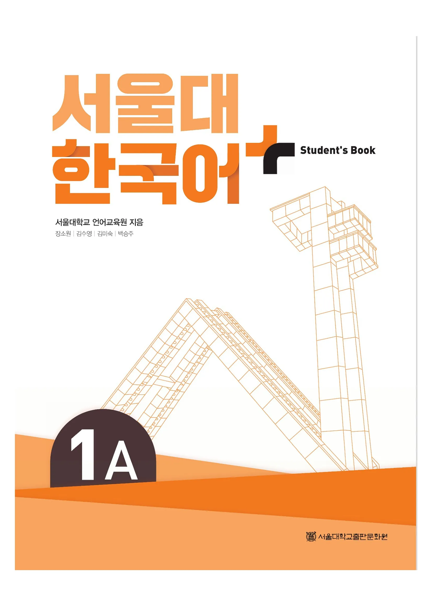
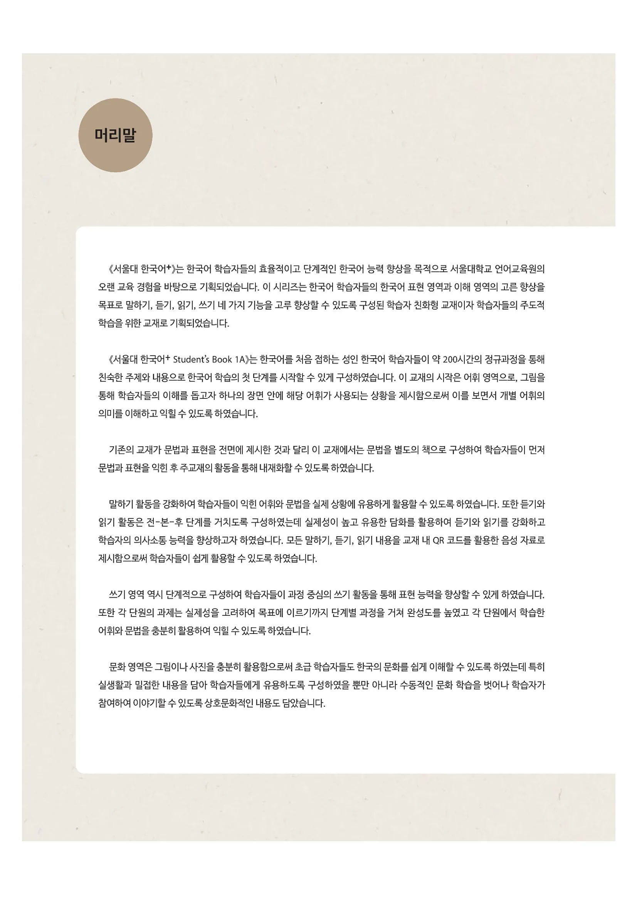
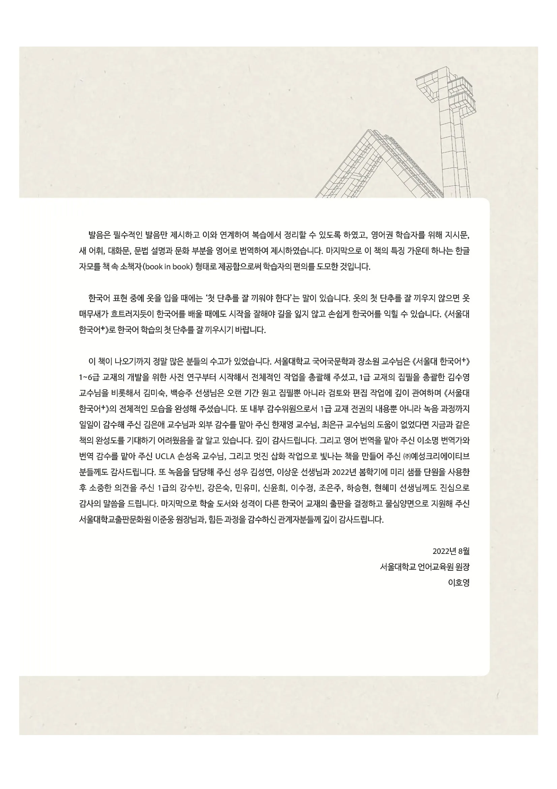
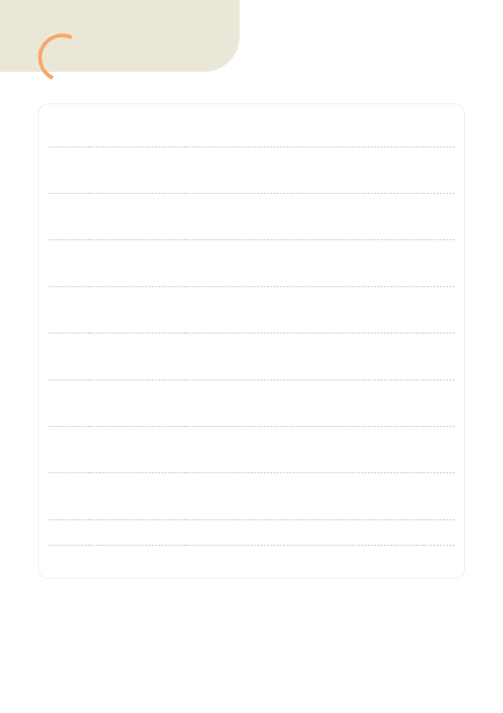
머리말• 2등장인물• 51단원인사1-1. 저는 이유진이에요• 91-2. 유진 씨는 학생이에요?• 122단원교실과 방2-1. 이거는 시계예요• 182-2. 이 가방은 나나 씨 가방이에요• 213단원가게3-1. 이 빵 하나 주세요• 273-2. 집 앞에 편의점이 있어요• 304단원일상생활4-1. 저는 한국어를 공부해요• 364-2. 오늘 회사에 가요• 395단원식당5-1. 비빔밥하고 불고기가 맛있어요• 455-2. 주스 세 병에 오천 원이에요• 486단원날짜와 요일6-1. 토요일에 친구를 만나요• 546-2. 친구들하고 밥을 먹을 거예요• 577단원시간7-1. 보통 몇 시에 일어나요?• 637-2. 어제 한강공원에 갔어요• 668단원날씨8-1. 오늘 날씨가 어때요?• 728-2. 토요일에는 비가 오고 조금 추워요• 75문법과 표현• 79어휘• 9741A차례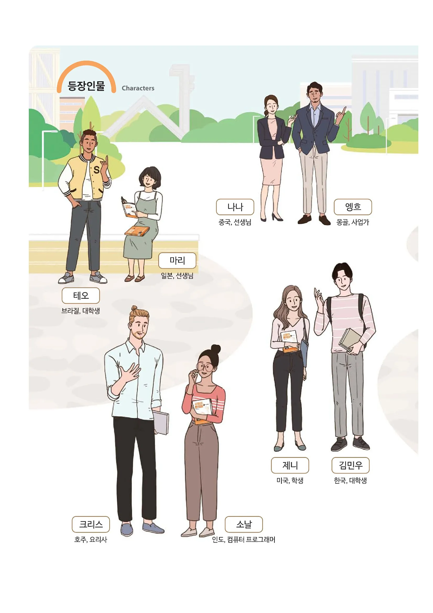
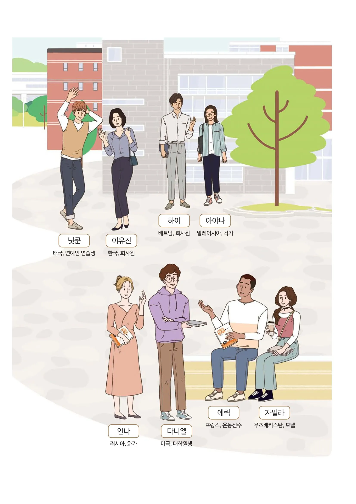
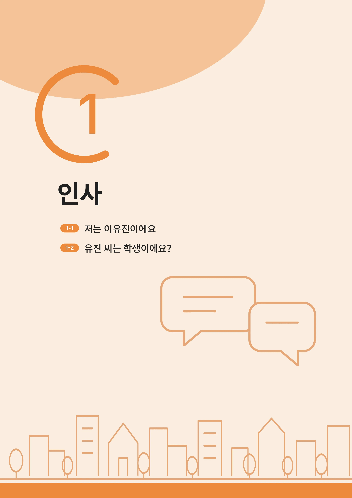
1인사1-1저는 이유진이에요1-2유진 씨는 학생이에요?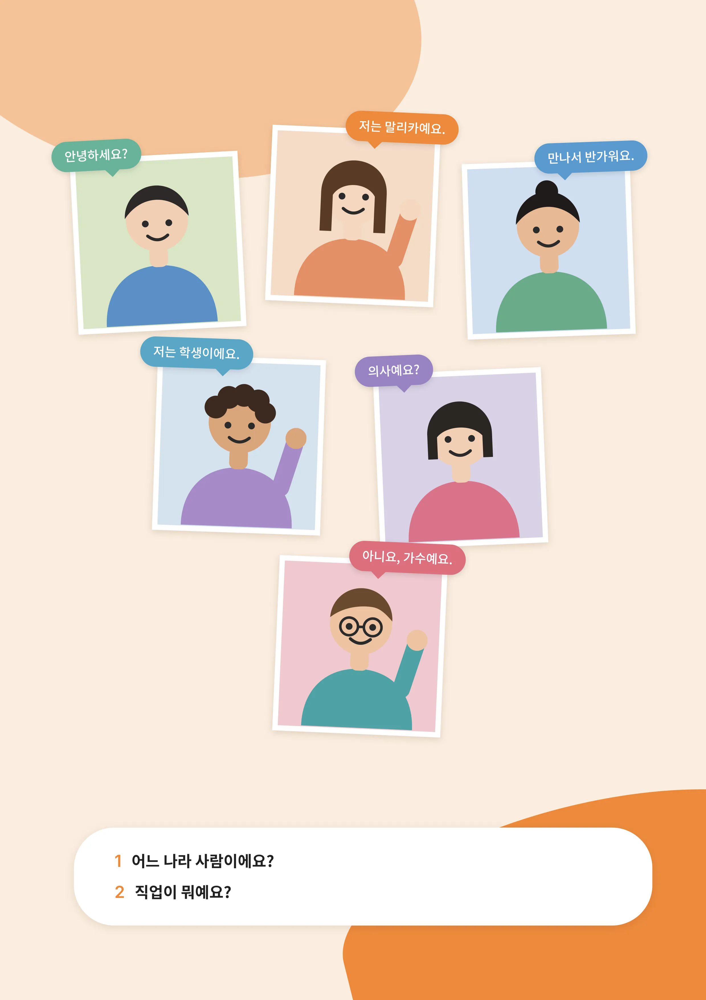
안녕하세요?저는 말리카예요.만나서 반가워요.저는 학생이에요.의사예요?아니요, 가수예요.1 어느 나라 사람이에요?2 직업이 뭐예요?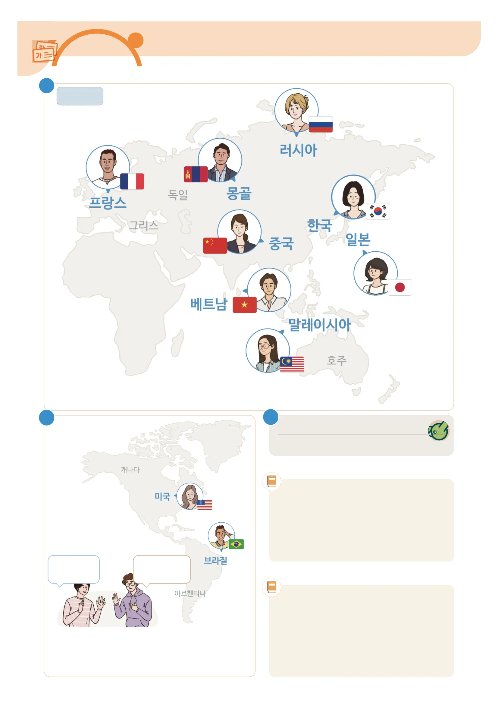
1-1Lug'at어휘저는 이유진이에요Men Li Yujinman나라안녕하세요?저는 김민우예요.한국 사람이에요.안녕하세요?저는 다니엘이에요.미국 사람이에요.이야기해 보세요▸ 어느 나라 사람이에요?한국 Koreya일본 Yaponiya브라질 Braziliya베트남 Vyetnam미국 Amerika Qo'shma Shtatlari프랑스 Fransiya말레이시아 Malayziya나라 mamlakat중국 Xitoy러시아 Rossiya몽골 Mo'g'uliston한국 사람 koreys일본 사람 yapon브라질 사람 braziliyalik베트남 사람 vyetnamlik미국 사람 amerikalik프랑스 사람 fransuz말레이시아 사람malayziyalik사람 odam중국 사람 xitoylik러시아 사람 rus몽골 사람 mo'g'ul9123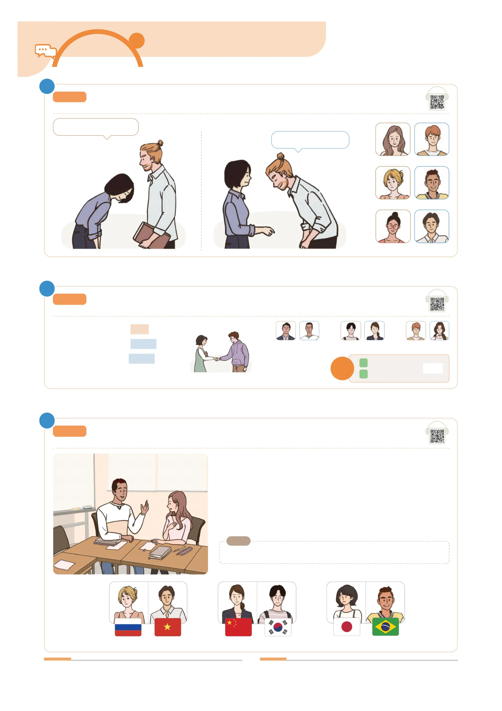
1-1Gapirish말하기말하기 1친구와 연습해 보세요.Sherigingiz bilan mashq qiling.1)제니닛쿤2)안나테오3)소날하이저는 이유진이에요.저는 크리스예요.말하기 2친구와 연습해 보세요.Sherigingiz bilan mashq qiling.가: 안녕하세요? 저는 마리예요.나: 안녕하세요? 저는 다니엘이에요.가: 만나서 반가워요, 다니엘 씨.나: 반가워요.1)엥흐에릭2)김민우나나3)닛쿤자밀라명은/는☞81쪽명이에요/예요말하기 3친구와 이야기해 보세요.Sherigingiz bilan suhbatlashing.제니: 안녕하세요? 저는 제니예요.에릭: 안녕하세요? 저는 에릭이에요.제니: 만나서 반가워요, 에릭 씨.에릭: 반가워요. 제니 씨는 어느 나라 사람이에요?제니: 저는 미국 사람이에요.1)안나, 러시아하이, 베트남2)나나, 중국김민우, 한국3)마리, 일본테오, 브라질• 에릭이에요 [에리기에요] • 사람이에요 [사라미에요]발음저 men (hurmat shakli)안녕하세요 Salom씨 janob/xonim(만나서) 반가워요 Tanishganimdan xursandman어느 qaysi10문법과표현456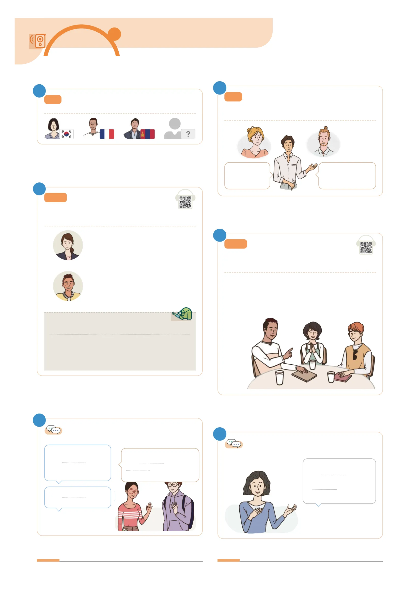
1-1Tinglash듣기준비어느 나라 사람이에요?Siz qaysi mamlakatdansiz?듣기 1나나와 테오의 대화입니다. 잘듣고 맞는 것을 연결하세요.Nana va Teo suhbatini tinglang va odamnimamlakati bilan moslang.1)나나2)테오• ① 중국 사람• ② 미국 사람• ③ 브라질 사람• ④ 프랑스 사람국적을 말할 때Millatingizni aytganda저는 미국 사람이에요.Men amerikalikman.저는 미국에서 왔어요.Men Amerikadan keldim.친구와 이야기해 보세요.Sherigingiz bilan suhbatlashing.안녕하세요?저는 소날 이에요/예요.만나서 반가워요.저는 인도 에서 왔어요.반가워요.저는 이에요/예요. 씨는 어느 나라 사람이에요?준비우리 반 친구는 어느 나라 사람이에요?Sinfdoshlarimiz qaysi mamlakatdan?안나 씨예요.러시아 사람이에요.크리스 씨예요.크리스 씨는 호주 사람이에요.듣기 2반 친구들의 대화입니다. 잘 듣고 맞는 것을 고르세요.Bu sinfdoshlar suhbati. Diqqat bilantinglang va to'g'ri javobni tanlang.① 에릭은 일본 사람이에요.② 닛쿤은 태국 사람이에요.③ 마리는 프랑스 사람이에요.자기소개를 해 보세요.O'zingizni tanishtiring.안녕하세요?저는 이에요/예요. 사람이에요.만나서 반가워요.네 Ha인도 Hindiston친구 do'st/sinfdosh호주 Avstraliya태국 Tailand11789101112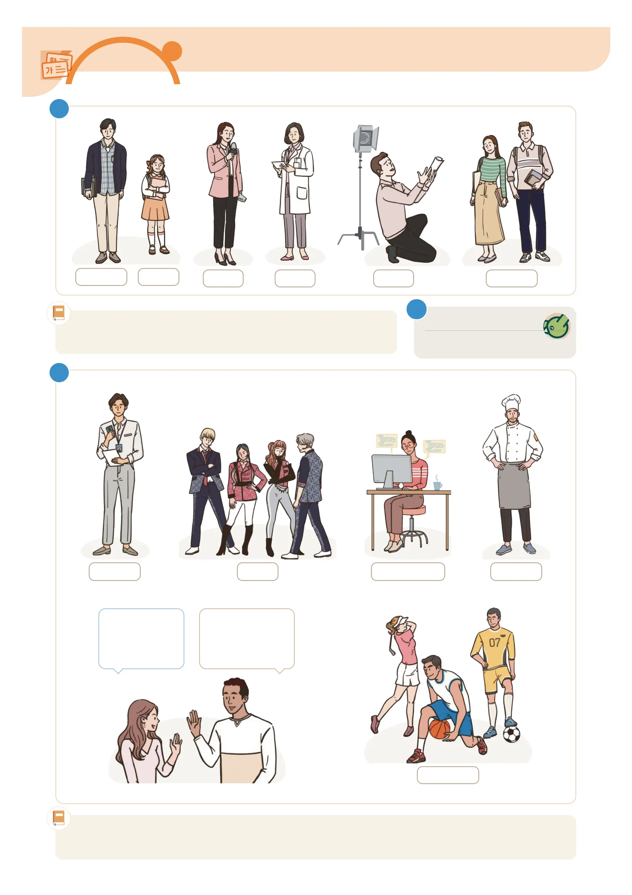
1-2Lug'at어휘유진 씨는 학생이에요?Yujin, siz o'quvchimisiz?기자의사배우대학생선생님학생선생님 o'qituvchi학생 o'quvchi기자 muxbir의사 shifokor배우 aktyor/aktrisa대학생 talaba이야기해 보세요▸ 직업이 뭐예요?회사원가수프로그래머요리사운동선수안녕하세요?저는 제니예요.미국 사람이에요.학생이에요.안녕하세요?저는 에릭이에요.프랑스 사람이에요.운동선수예요.회사원 ofis xodimi가수 qo'shiqchi프로그래머 dasturchi요리사 oshpaz운동선수 sportchi12123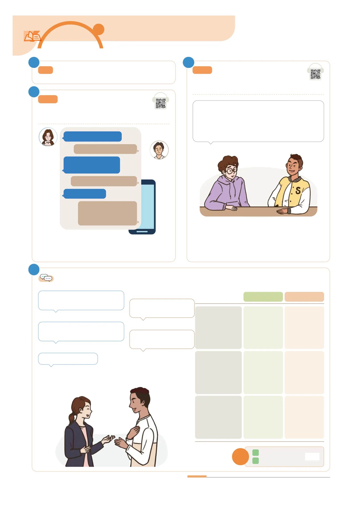
1-2O'qish읽기준비어느 나라 사람이에요?Siz qaysi mamlakatdansiz?읽기 1자밀라와 하이의 대화입니다.잘 읽고 맞는 것을 고르세요.Bu Jamila va Hay suhbati. Diqqat bilano'qing va to'g'ri javobni tanlang.① 하이는 운동선수예요.② 하이는 회사원이에요.자밀라읽기 2다니엘의 이야기입니다. 잘읽고 맞는 것을 고르세요.Bu Daniel haqidagi matn. Diqqat bilano'qing va to'g'ri javobni tanlang.① 테오는 대학생이 아니에요.② 다니엘은 브라질 사람이에요.③ 테오는 다니엘 룸메이트예요.저는 다니엘이에요. 미국 사람이에요. 저는대학원생이에요. 테오 씨는 제 룸메이트예요.테오 씨는 미국 사람이 아니에요. 브라질사람이에요. 대학생이에요.친구와 이야기해 보세요.Sinfdoshlaringiz bilan gaplashib, kataklarni to'ldiring.명이에요/예요?☞82쪽명이/가 아니에요안녕하세요? 저는 나나예요.이름이 뭐예요?저는 에릭이에요.만나서 반가워요.반가워요.에릭 씨는 어느 나라 사람이에요?저는 프랑스 사람이에요.나나 씨는요?저는 중국에서 왔어요.이름이 뭐예요?어느 나라사람이에요?직업이 뭐예요?친구 1친구 2아니요 Yo'q대학원생 magistrant/aspirant제 mening룸메이트 xonadosh이름 ism뭐 nima직업 kasb13안녕하세요? 하이 씨.안녕하세요? 자밀라 씨.하이 씨는 어느 나라사람이에요?저는 베트남 사람이에요.운동선수예요?아니요.운동선수가 아니에요.저는 회사원이에요.문법과표현하이4567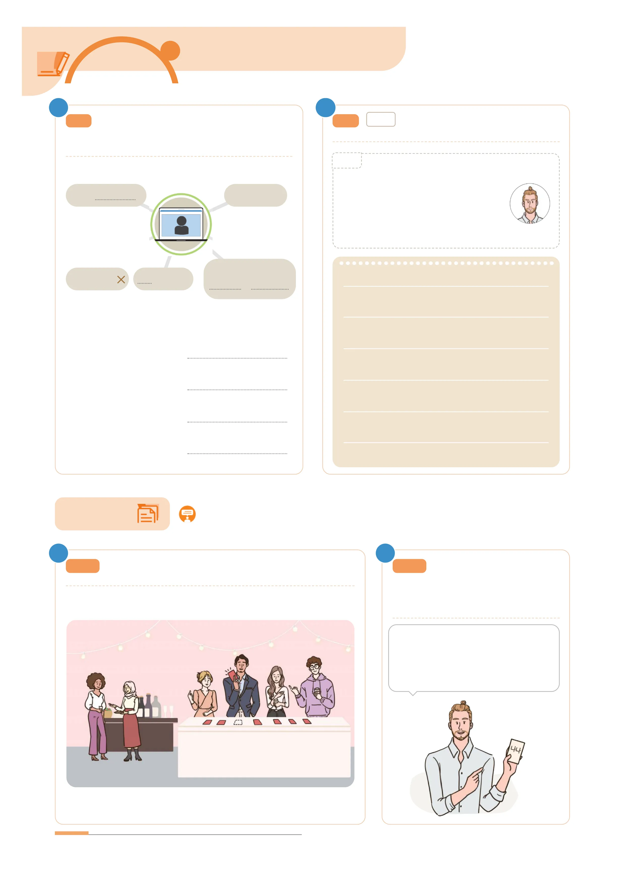
자기소개를 해 보세요.O'zingizni tanishtiring.1-2Yozish쓰기준비그림에 메모하고 질문에 답해보세요.Qaydlar yozing va quyidagi savollarga javob bering.1이름이 뭐예요?2한국 사람이에요?3학생이에요?4메일 주소가 뭐예요?이름 학생한국 사람 사람 ○메일 주소@쓰기보기와 같이 자기소개를 써 보세요.Namunadagidek o'zingiz haqingizda yozing.여러분, 안녕하세요? 저는크리스예요. 호주 사람이에요.요리사예요. 제 메일 주소는lovegimbap@snulei.com이에요.만나서 반가워요.보기Topshiriq 과제과제 1친구들과 파티를 해요. 먼저 카드를 고르세요.Siz sinfdoshlaringiz bilan ziyofatdasiz. Avval bitta karta tanlang.과제 2카드를 뽑아서자기소개를 해 보세요.Tanlangan kartadagima'lumotlardan foydalanibo'zingizni tanishtiring.안녕하세요? 저는 나나예요.중국 사람이에요. 저는선생님이에요.만나서 반가워요.메일 elektron pochta주소 manzil여러분 hamma14891011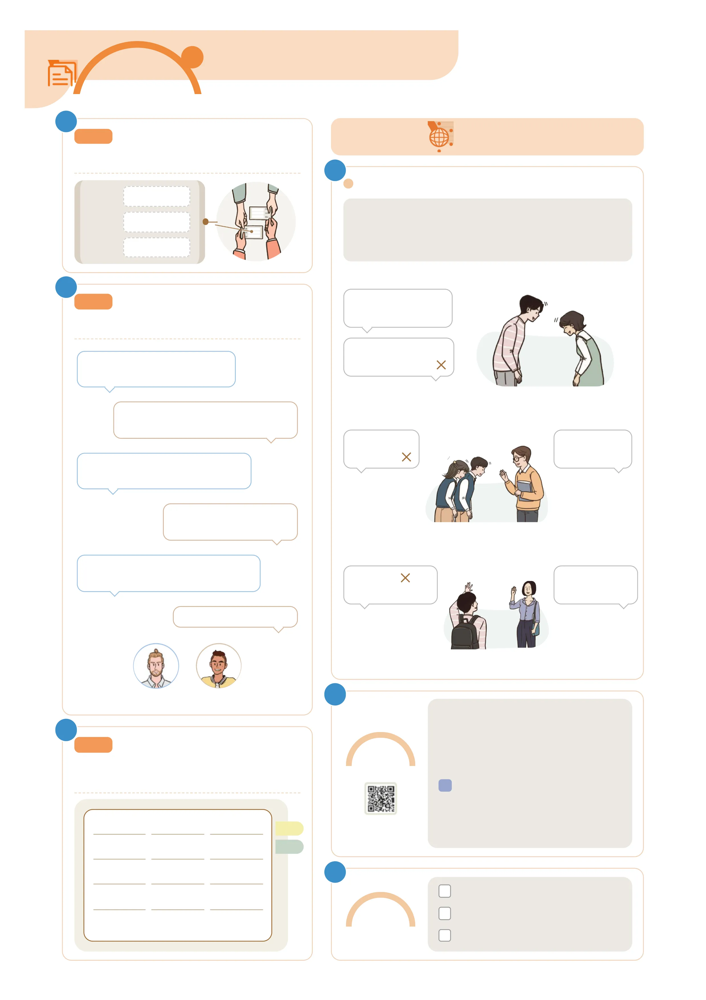
1-2Topshiriq과제과제 3여러분의 이름, 국적, 직업을 써보세요.Ismingiz, millatingiz va kasbingizni yozing.이름국적직업과제 4친구를 만나서 자기소개를 해보세요.Sinfdoshlaringizga o'zingizni tanishtiring.크리스테오안녕하세요? 만나서 반가워요.저는 크리스예요.만나서 반가워요. 저는 테오예요.크리스 씨는 어느 나라 사람이에요?저는 호주 사람이에요.테오 씨는 어느 나라 사람이에요?저는 브라질 사람이에요.크리스 씨는 학생이에요?아니요. 학생이 아니에요.요리사예요. 테오 씨는 학생이에요?네. 저는 학생이에요.과제 5친구의 이야기를 듣고 메모해보세요.Sinfdoshingizning o'zini tanishtirishinitinglab, bo'sh joylarni to'ldiring.이름국적직업Madaniyat 문화여러분 나라에서는 어떻게 인사해요?한국 사람들은 처음 만나면 허리를 굽히고 인사해요.여러분 나라에서는 어떻게 인사해요? 친구하고 인사해보세요.안녕하세요?저는 김민우예요. ○안녕하세요?저는 마리 씨예요.안녕하세요?선생님 김.안녕하세요?김 선생님. ○이 씨,만나서 반가워요.아, 민우 씨. ○반가워요.발음Talaffuz받침은 뒤 음절이 모음으로 시작하면그 음절의 첫소리로 발음됩니다.Bo'g'in oxiridagi undoshdan keyin unli kelsa, ukeyingi bo'g'inga o'tib, o'sha bo'g'inning birinchitovushi sifatida talaffuz qilinadi.예가: 어느 나라 사람이에요?나: 저는 독일 사람이에요.가: 나나 씨는 회사원이에요?나: 아니요. 선생님이에요.자기 평가O'zini tekshirish이름이 뭐예요?직업이 뭐예요?어느 나라 사람이에요?15121314151617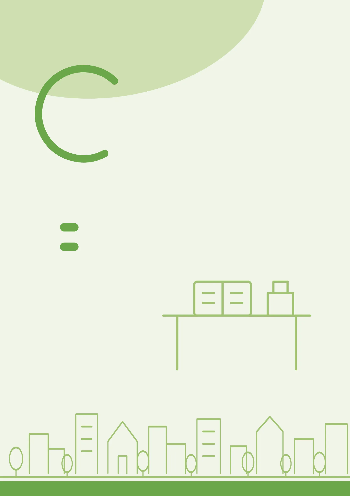
2교실과 방2-1이거는 시계예요2-2이 가방은 나나 씨 가방이에요이거는 뭐예요?그거는 시계예요.이 가방은 제 가방이에요.볼펜이 있어요?네, 있어요.지우개가 없어요.1 교실에 뭐가 있어요?2 여러분 방에 뭐가 있어요?
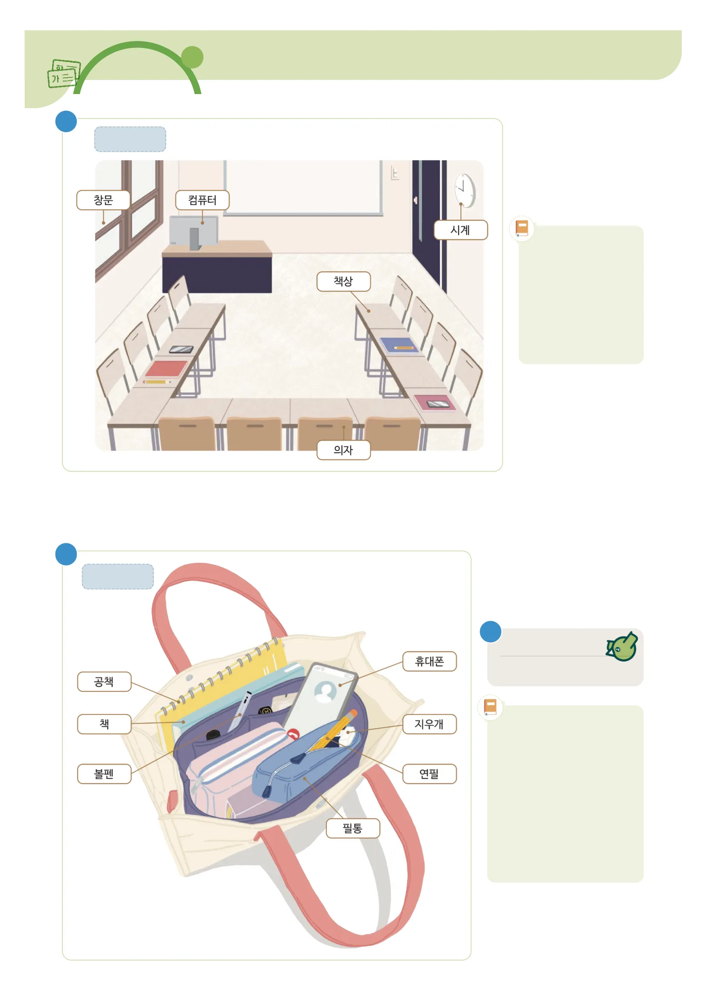
2-1Lug'at어휘이거는 시계예요Bu soat교실교실 sinfxona창문 deraza컴퓨터 kompyuter책상 yozuv stoli시계 soat의자 stul가방이야기해 보세요▸ 이거는 뭐예요?가방 sumka공책 daftar휴대폰 mobil telefon책 kitob지우개 o'chirg'ich볼펜 sharikli ruchka필통 qalamdon연필 qalam18123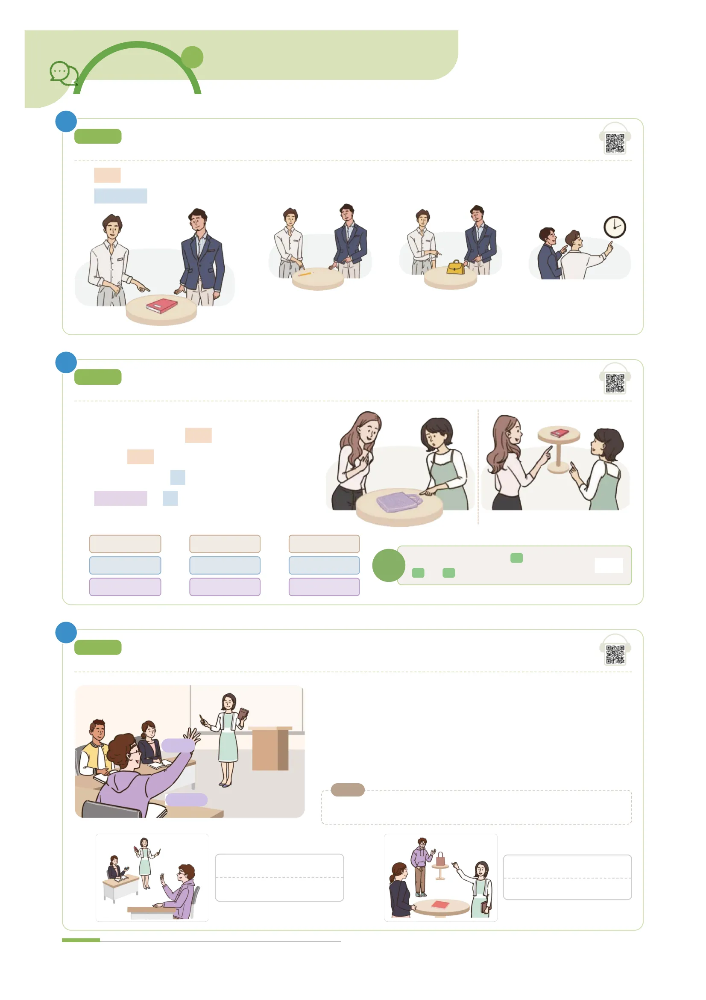
2-1Gapirish말하기말하기 1친구와 연습해 보세요.Sherigingiz bilan mashq qiling.가: 이거는 뭐예요?나: 한국어 책이에요.1)2)3)말하기 2친구와 연습해 보세요.Sherigingiz bilan mashq qiling.가: 이거는 제니 씨의 가방이에요?나: 네. 제 가방이에요.가: 저거는 누구의 책이에요?나: 줄리앙 씨의 책이에요.1)책공책에릭 씨2)볼펜휴대폰하이 씨3)컴퓨터필통나나 씨이거는/그거는/저거는명이에요/예요☞83쪽명(의) 명말하기 3친구와 이야기해 보세요.Sherigingiz bilan suhbatlashing.선생님:이거는 누구의 공책이에요?다니엘:제 공책이에요.선생님:이거는 나나 씨의 볼펜이에요?나 나: 아니요. 제 볼펜이 아니에요.다니엘:선생님, 그거는 제 볼펜이에요.1)이거, 필통이거, 나나 씨, 연필2)나나다니엘• 누구의 [누구에] • 나나 씨의 [나나 씨에]발음한국어 koreys tili누구 kim19문법과표현456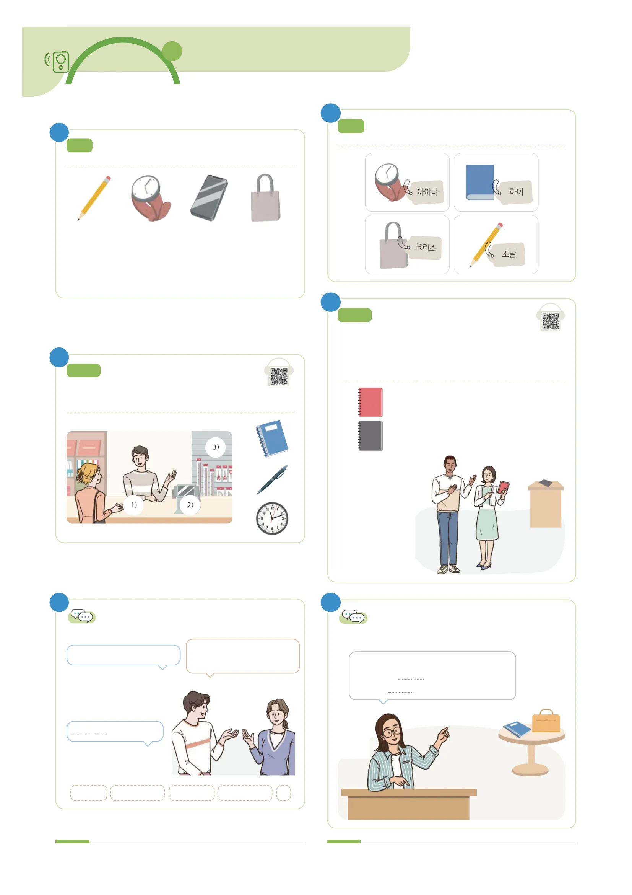
2-1Tinglash듣기준비이거는 한국어로 뭐예요?Bu koreys tilida nima deyiladi?••시계••가방••연필••휴대폰듣기 1여기는 가게입니다. 잘 듣고 연결하세요.Bu do'kon. Diqqat bilan tinglang va mosravishda bog'lang.①②③친구와 이야기해 보세요.Sherigingiz bilan mashq qiling.이거는 한국어로 뭐예요?연필이에요.연필은 중국어로 뭐예요?이에요/예요.영어로베트남어로몽골어로러시아어로?준비이거는 누구의 물건이에요?Bu kimning narsasi?듣기 2에릭과 선생님의 대화입니다.잘 듣고 맞으면 ○, 틀리면 × 하세요.Bu Erik va o'qituvchi suhbati. Diqqat bilantinglang, to'g'ri bo'lsa ○, noto'g'ri bo'lsa ×qo'ying.1)이거는 선생님의 공책이에요.( )2)저거는 에릭 씨의 공책이에요.( )여기는 교실이에요. 뭐가 있어요? 누구의물건이에요?Bu sinfxona. Bu yerda nima bor? Narsalar kimniki?이거는 책상이에요.저거는 씨의 가방이에요.저거는 씨의 공책이 아니에요.한국어로 koreys tilida중국어로 xitoy tilida그럼 unda/u holda20789101112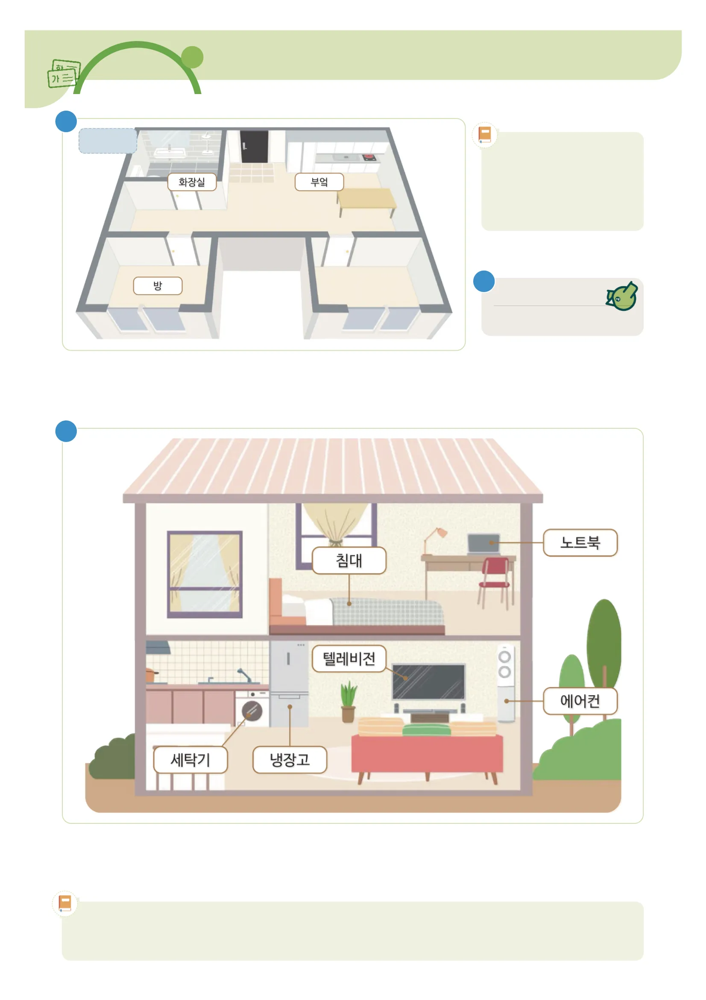
2-2Lug'at어휘이 가방은 나나 씨 가방이에요Bu Nananing sumkasi집집 uy화장실 hojatxona부엌 oshxona방 xona이야기해 보세요▸ 집에 뭐가 있어요?침대 karavot노트북 noutbuk세탁기 kir yuvish mashinasi냉장고 muzlatgich텔레비전 televizor에어컨 konditsioner21123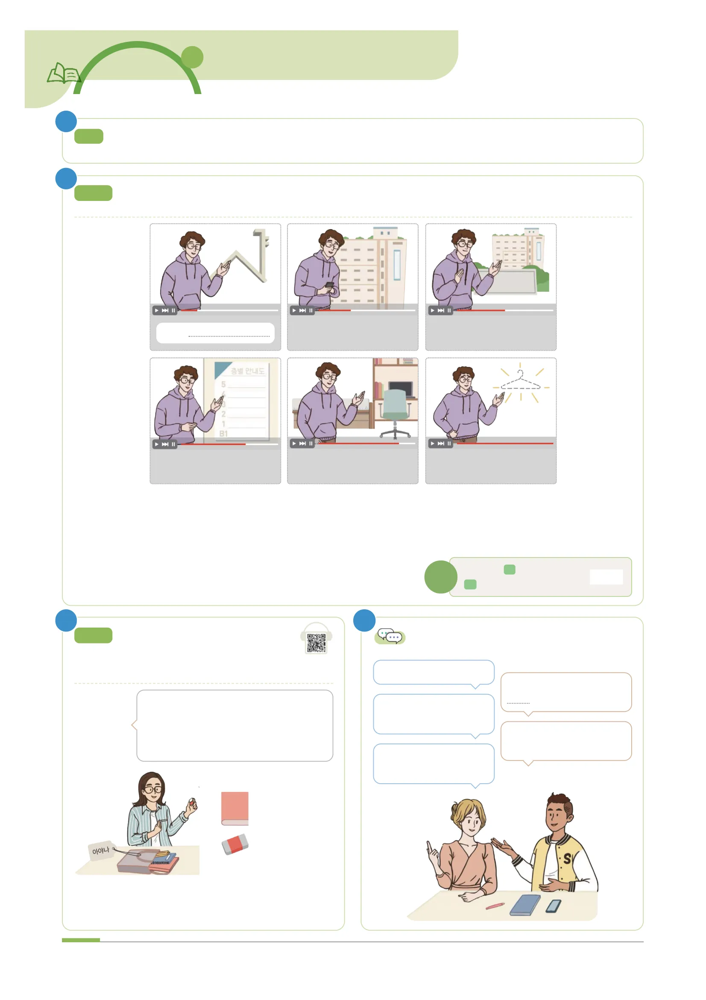
2-2O'qish읽기준비방에 뭐가 있어요?Xonada nima bor?읽기 1다니엘의 비디오입니다. 잘 읽고 질문에 답해 보세요.Bu Danielning videosi. Diqqat bilan o'qing va savollarga javob bering.제목: 저는 다니엘이에요서울대학교 학생이에요.우리 학교 기숙사예요.화장실, 부엌, 방이 있어요.제 방이에요.책상, 의자, 침대가 있어요.옷걸이가 없어요.1 이 비디오의 제목이 뭐예요?① 저는 학생이에요.② 서울대학교 기숙사예요.2 맞으면 ○, 틀리면 × 하세요.1) 책상, 의자, 옷걸이가 있어요.( )2) 다니엘은 서울대학교 학생이에요. ( )이/그/저 명☞84쪽명이/가 있어요/없어요읽기 2아야나의 이야기입니다. 잘 읽고알맞은 것을 연결하세요.Bu Ayana haqidagi matn. Diqqat bilano'qing va narsani egasi bilan moslang.1)•• ① 아야나2)•• ② 크리스이거는 제 가방이에요.한국어 책, 공책, 필통이 있어요.이 지우개는 제 지우개가 아니에요.크리스 씨의 지우개예요.친구의 책상에 뭐가 있어요? 뭐가 없어요?Sherigingizning stolida nima bor? Stolda nima yo'q?볼펜이 있어요?아니요. 볼펜이 없어요.연필이 있어요.아, 이 볼펜은친구의 볼펜이에요.네. 있어요. 씨는 볼펜이 있어요?그럼 그 볼펜은누구의 볼펜이에요?여기 bu yerda서울대학교 Seul milliy universiteti기숙사 yotoqxona학교 maktab옷걸이 kiyim ilgich22문법과표현4567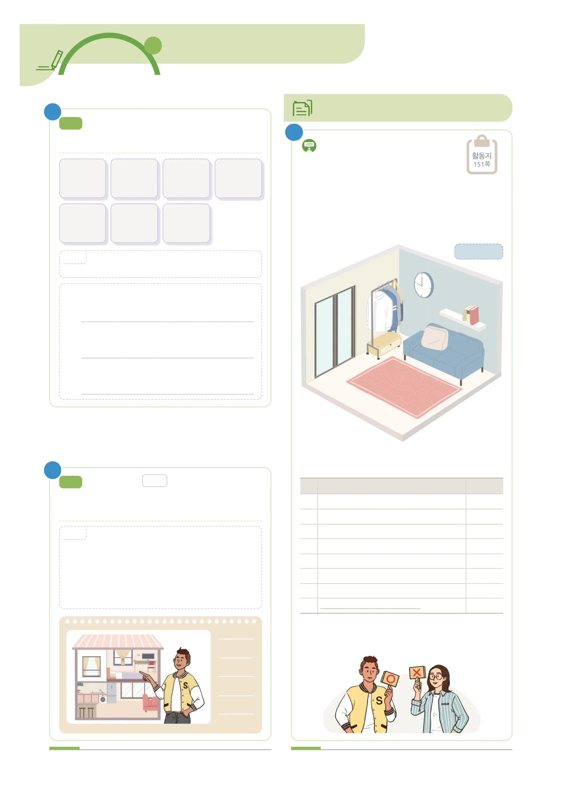
Topshiriq과제2-2Yozish쓰기준비여러분 방에 뭐가 있어요? 모두 써보세요.Xonangizda nima bor? Hammasini yozing.침대책상의자컴퓨터1)2)3)제 방이에요. 침대가 있어요.보기쓰기메모를 보고 보기 와 같이 여러분의방을 소개해 보세요.Yozuvlaringizga qarab namunadagidek xonangiznitasvirlang.여기는 우리 집이에요.이 방은 제 방이에요. 침대, 책상, 의자,컴퓨터가 있어요.그리고 저기는 부엌이에요. 냉장고가있어요.보기방에 뭐가 있어요?Xonangizda nima bor?1 그림을 보고 친구와 이야기해 보세요.Rasmga qarab sherigingiz bilan mashq qiling.인터뷰 질문그림 B1소파가 있어요?✕2침대가 있어요?3책상이 있어요?4의자가 있어요?5시계가 있어요?6거울이 있어요?7노트북이 있어요?8?그림 A우리 bizning저기 u yerda소파 divan거울 oyna (ko'zgu)238910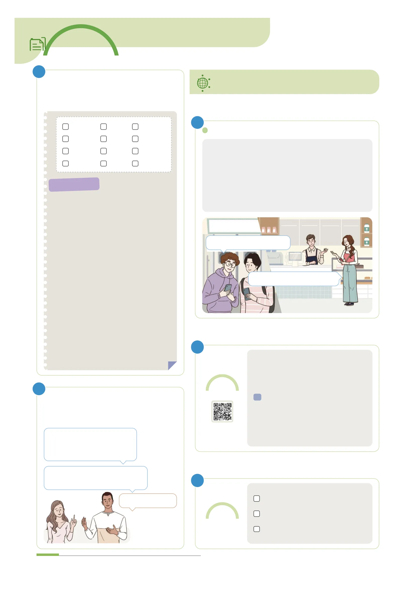
Madaniyat문화Topshiriq과제2 여러분 방에 뭐가 있어요? ☑ 하고 방을그려 보세요.Xonangizda nima bor? Bor narsalarni belgilang vaxonangizni chizing.소파침대거울노트북에어컨냉장고텔레비전세탁기책상의자옷걸이와이파이제 방이에요.3 친구의 방에 뭐가 있어요? 친구하고이야기해 보세요.Sherigingizning xonasida nima bor? Sherigingiz bilangaplashing.이 방은 제 방이에요.침대가 있어요. 책상이 있어요.텔레비전이 없어요.아니요. 없어요.이 노트북은 친구의 노트북이에요.노트북이 있어요?와이파이 비밀번호가 뭐예요?한국의 버스, 지하철에는 무료 와이파이(Wi-Fi)가있어요. 카페에도 와이파이가 있어요. 와이파이아이디, 비밀번호를 모르면 “와이파이 아이디가뭐예요?”, “와이파이 비밀번호가 뭐예요?”라고물어보세요.와이파이 아이디가 뭐예요?와이파이 비밀번호가 뭐예요?Talaffuz명사와 명사 사이에 ‘의’는 [에]로발음됩니다.Ikki ot orasidagi ‘의’ [에] deb talaffuz qilinadi.예 가: 이거는 누구의 책이에요? 나: 나나 씨의 책이에요. 가: 이 필통은 에릭 씨의 필통이에요? 나: 네. 제 필통이에요.발음O'zini tekshirish이거는 뭐예요?지우개가 있어요?그 책은 누구 책이에요?자기 평가와이파이 Wi-Fi241112131415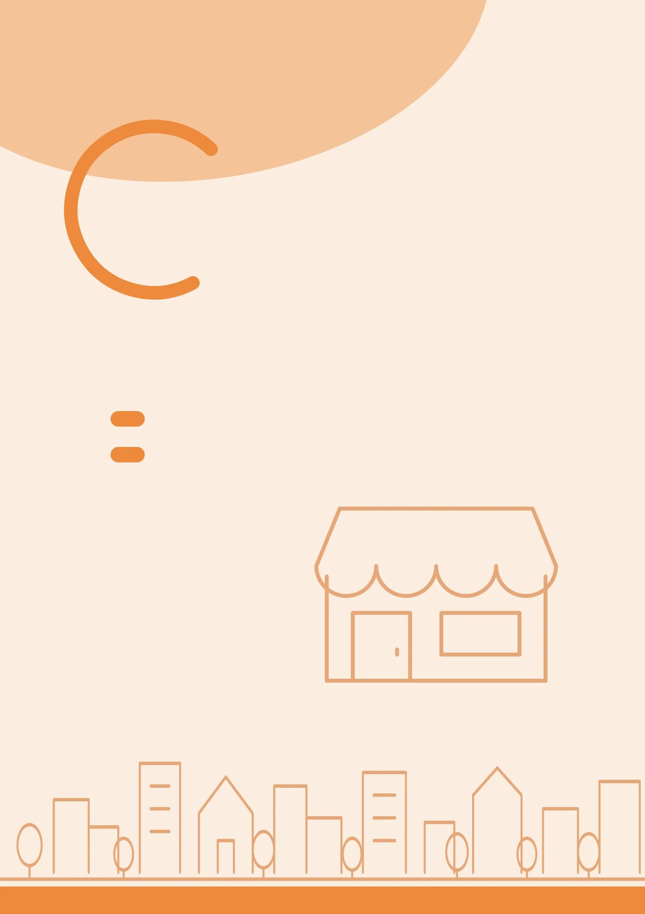
3가게3-1이 빵 하나 주세요3-2집 앞에 편의점이 있어요어서 오세요.빵 하나 주세요.물하고 주스 주세요.편의점이 어디에 있어요?은행 옆에 있어요.네, 여기 있어요.1 가게에 뭐가 있어요?2 집 앞에 뭐가 있어요?
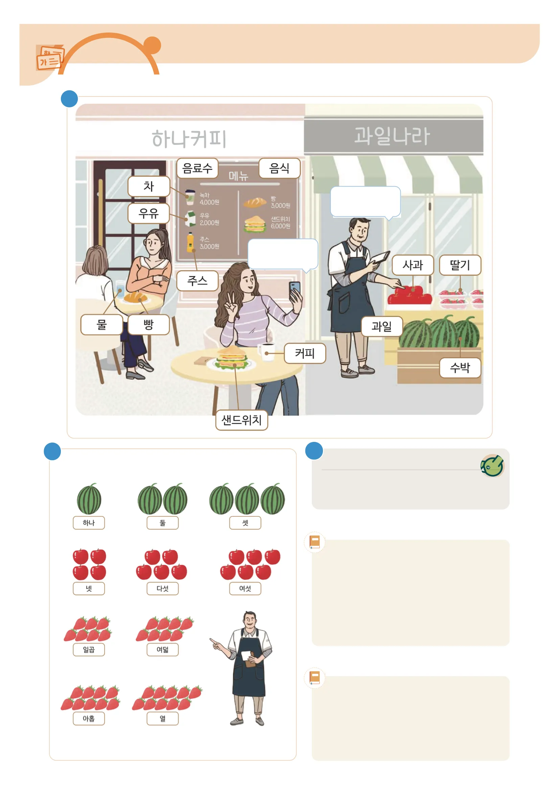
3-1Lug'at어휘이 빵 하나 주세요Menga shu non kerak하나, 둘, 셋하나, 둘, 셋이야기해 보세요▸ 과일 가게에 뭐가 있어요?▸ 한국어로 숫자(1~10)를 말해 보세요.음식 ovqat빵 non샌드위치 sendvich과일 meva사과 olma딸기 qulupnay수박 tarvuz음료수 ichimlik물 suv우유 sut커피 qahva차 choy주스 sharbat1하나bir2둘ikki3셋uch4넷to'rt5다섯besh6여섯olti7일곱yetti8여덟sakkiz9아홉to'qqiz10열o'n27123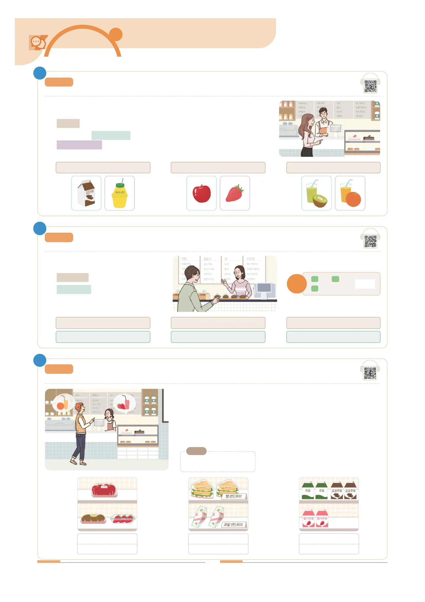
3-1Gapirish말하기말하기 1친구와 연습해 보세요.Sherigingiz bilan mashq qiling.가: 어서 오세요.나: 케이크가 있어요?가: 네. 있어요. 딸기 케이크하고초콜릿 케이크가 있어요.1)우유2)과일3)주스말하기 2친구와 연습해 보세요.Sherigingiz bilan mashq qiling.가: 이거는 뭐예요?나: 초콜릿 빵이에요.가: 이 빵 하나 주세요.나: 네. 여기 있어요.명하고 명☞85쪽명 주세요1)샌드위치이 샌드위치 (1)2)딸기 빙수이거 (2)3)녹차 아이스크림이거 (1) + 커피 (2)말하기 3친구와 이야기해 보세요.Sherigingiz bilan suhbatlashing.점원: 어서 오세요.닛쿤: 주스가 있어요?점원: 네. 오렌지 주스하고 딸기 주스가 있어요.닛쿤: 그럼 오렌지 주스 주세요.점원: 여기 있어요.1)과일사과, 키위, 딸기2)3)• 있어요 [이써요]발음어서 오세요 Xush kelibsiz케이크 tort초콜릿 shokolad빙수 pinsu (muzli desert)녹차 ko'k choy아이스크림 muzqaymoq오렌지 apelsin여기 있어요 Marhamat키위 kivi햄 vetchina28문법과표현456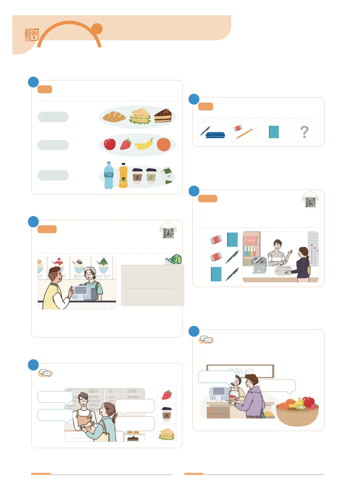
3-1Tinglash듣기준비알맞은 것을 연결하세요.So'zni to'g'ri rasmlar bilan moslang.과일••음료수••음식••듣기 1여기는 빙수 가게입니다. 잘 듣고맞으면 ○, 틀리면 × 하세요.Bu pinsu do'koni. Diqqat bilan tinglang, to'g'ribo'lsa ○, noto'g'ri bo'lsa × qo'ying.1) 키위 빙수가 있어요.( )2) 딸기 빙수하고 망고 빙수가 없어요.( )가게에서 직원을 부를 때Do'konda xodimnichaqirganda저기요. / 여기요.Kechirasiz?이야기해 보세요.Sherigingiz bilan suhbatlashing.어서 오세요.네. 있어요.딸기 주스가있어요?딸기 주스 하나주세요.준비문구점에 뭐가 있어요?Kanselyariya do'konida qanday narsalar sotiladi?듣기 2여기는 학교 문구점입니다.잘 듣고 맞는 것을 고르세요.Bu maktabning kanselyariya do'koni.Diqqat bilan tinglang va to'g'ri rasmnitanlang.①②③여기는 과일 가게입니다. 뭐가있어요? 이야기해 보세요.Bu meva do'koni. U yerda nima bor? Sherigingizbilan gaplashing.어서 오세요.망고 있어요?가게 do'kon망고 mango어디 qayerda문구점 kanselyariya do'koni29789101112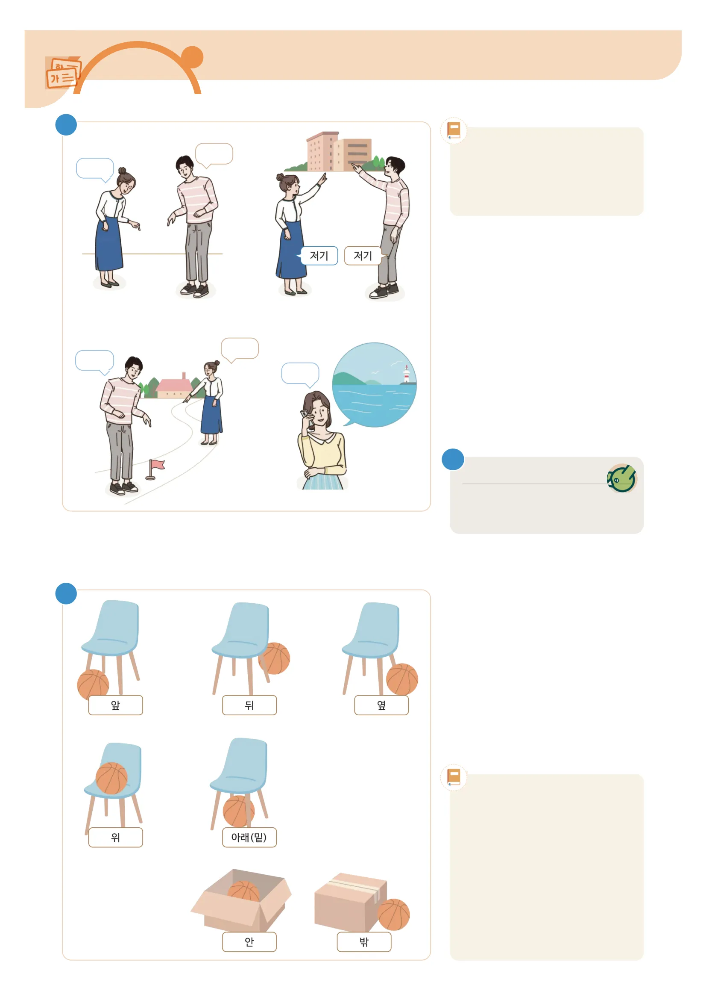
3-2Lug'at어휘집 앞에 편의점이 있어요Uyim oldida do'kon bor여기여기여기거기거기여기 bu yerda저기 u yerda (uzoqda)거기 u yerda이야기해 보세요▸ 교실 안에 뭐가 있어요?▸ 휴대폰이 어디에 있어요?앞 old뒤 orqa옆 yon위 ust/tepa아래(밑) ost/past안 ichkari밖 tashqari30123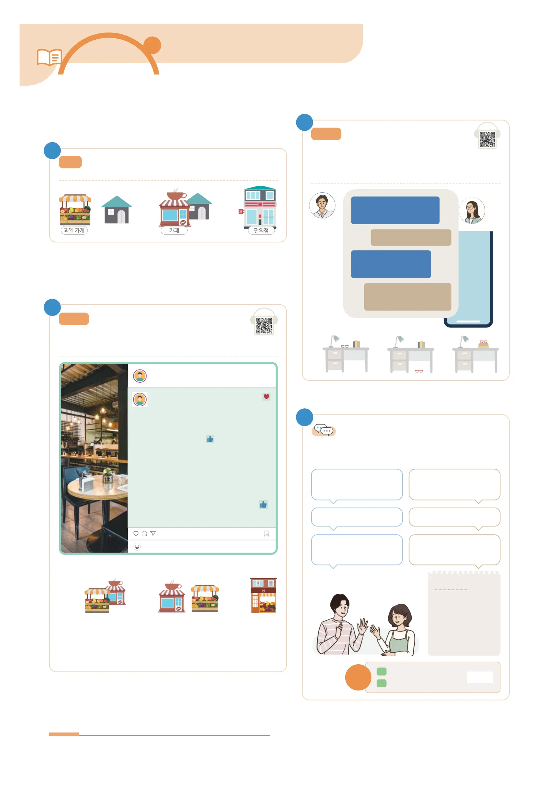
3-2O'qish읽기준비집이 어디에 있어요?Uy qayerda?읽기 1다니엘의 에스엔에스(SNS)입니다.잘 읽고 질문에 답해 보세요.Bu Danielning ijtimoiy tarmoqdagi sahifasi.Diqqat bilan o'qing va savollarga javob bering.Daniel서울 강남구•••좋아요 101개댓글 달기 ...게시1과일 가게가 어디에 있어요?①②③2맞으면 ○, 틀리면 × 하세요.1) 강남에 카페가 있어요.( )2) 카페에 바나나 케이크가 있어요.( )Daniel 여기는 카페예요.이 카페는 강남에 있어요.여기에 딸기 케이크하고커피가 있어요.이 카페 옆에 과일 가게가있어요.과일 가게에는 사과하고바나나하고 오렌지가 있어요.#강남 #케이크 #과일읽기 2하이의 안경이 어디에있어요? 잘 읽고 맞는그림을 고르세요.Hayning ko'zoynagi qayerda? Diqqatbilan o'qing va to'g'ri rasmni tanlang.①②③방 안에 뭐가 있어요? 친구의이야기를 듣고 그리세요.Xonada nima bor? Sherigingizning tasvirini tinglab,xonani chizing. 씨의 방명에 있어요/없어요☞86쪽명 앞/뒤/옆/위/아래방에 뭐가 있어요?침대하고 책상하고의자가 있어요.책상이 어디에 있어요?침대 옆에 있어요.책상 위에 뭐가 있어요?한국어 책하고공책이 있어요.편의점 24 soatlik do'kon카페 kafe강남 Gangnam바나나 banan안경 ko'zoynak31아야나 씨,지금 교실에 있어요?네. 교실에 있어요.교실에제 안경이 있어요?아, 책상 위에안경이 하나 있어요.문법과표현하이아야나4567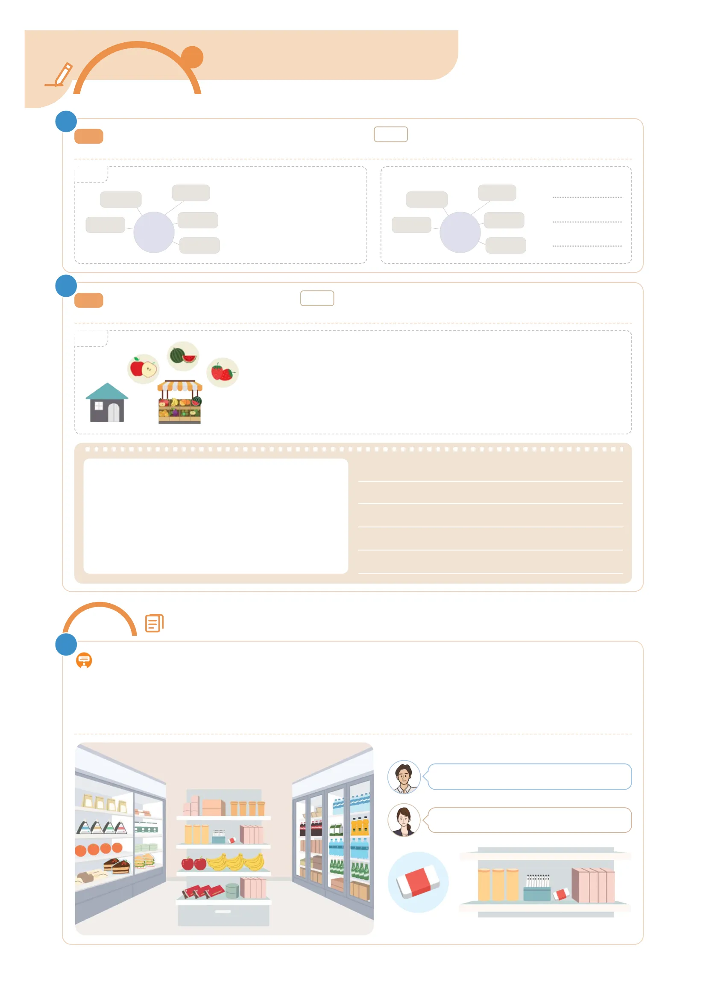
3-2Yozish쓰기준비여러분은 어디에 자주 가요? 거기에 뭐가 있어요? 보기와 같이 써 보세요.Qayerga tez-tez borasiz? U yerda nima bor? Namunadagidek o'sha joylardagi narsalarni tasvirlang.여기는 과일 가게예요.사과하고 바나나가 있어요.토마토하고 딸기가 있어요.토마토사과딸기과일가게바나나1)2)3)쓰기여러분 집 옆/뒤/앞에 뭐가 있어요? 보기와 같이 써 보세요.Namunadagidek uyingizning yonida/orqasida/oldida nima borligini tasvirlang.우리 집 옆에 과일 가게가 있어요.가게 이름은 ‘과일나라’예요.이 가게에 사과하고 수박하고 딸기가 있어요.Topshiriq과제편의점에서 물건을 사 보세요.Do'kondan narsalar sotib oling.1여기는 편의점이에요. 물건이 어디에 있어요? 카드를 보고 친구와 이야기해 보세요.Bu do'kon. Narsalar qayerda? Kartaga qarab sherigingiz bilan gaplashing.지우개가 어디에 있어요?볼펜 옆에 있어요.32보기보기8910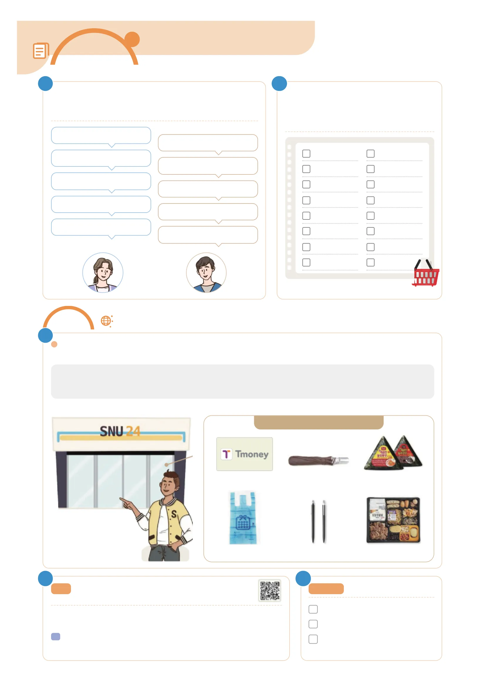
3-2Topshiriq과제2그림을 보고 점원과 손님이 되어 이야기해 보세요.Quyidagi rasmga qarab sherigingiz bilan sotuvchi va xaridor rolini ijroeting.지우개가 있어요?어디에 있어요?연필이 있어요?그럼 콜라가 있어요?지우개하고 콜라 주세요.네. 있어요.볼펜 옆에 있어요.아니요. 없어요.네. 저기 냉장고 안에 있어요.네.3뭐가 있어요? 뭘 샀어요? 표시해보세요.U yerda nima bor? Nima sotib oldingiz? Narsalarnibelgilang.초콜릿사과물연필아이스크림딸기우유공책빵오렌지커피볼펜샌드위치바나나콜라지우개Madaniyat문화편의점에 뭐가 있어요?여기는 편의점이에요. 한국의 편의점은 보통 24시간 열어요.편의점에 음료수하고 먹을 것이 있어요. 그리고 볼펜하고 우산이 있어요.뭐가 있어요?교통 카드우산삼각김밥쓰레기봉투볼펜도시락발음Talaffuz‘있어요’는 [이써요]로, ‘없어요’는 [업써요]로 발음합니다.‘있어요’ [이써요], ‘없어요’ esa [업써요] deb talaffuz qilinadi.예가: 사과가 어디에 있어요?나: 저기에 있어요.가: 집 옆에 가게가 있어요?나: 아니요. 없어요.자기 평가O'zini tekshirish방에 컴퓨터가 있어요?가방 안에 뭐가 있어요?휴대폰이 어디에 있어요?331112131415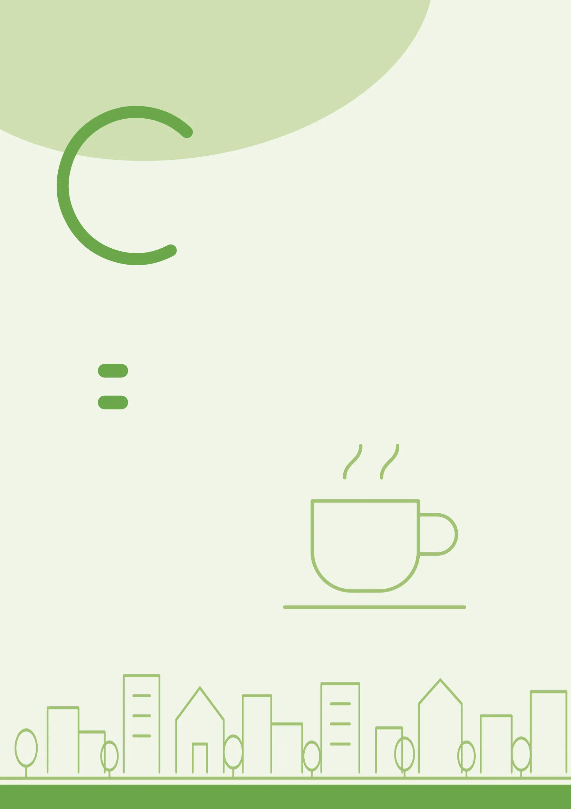
4일상생활4-1저는 한국어를 공부해요4-2오늘 회사에 가요지금 뭐 해요?한국어를 공부해요.어디에 가요?회사에 가요.카페에서 친구를 만나요.집에서 쉬어요.1 지금 뭐 해요?2 오늘 어디에 가요?
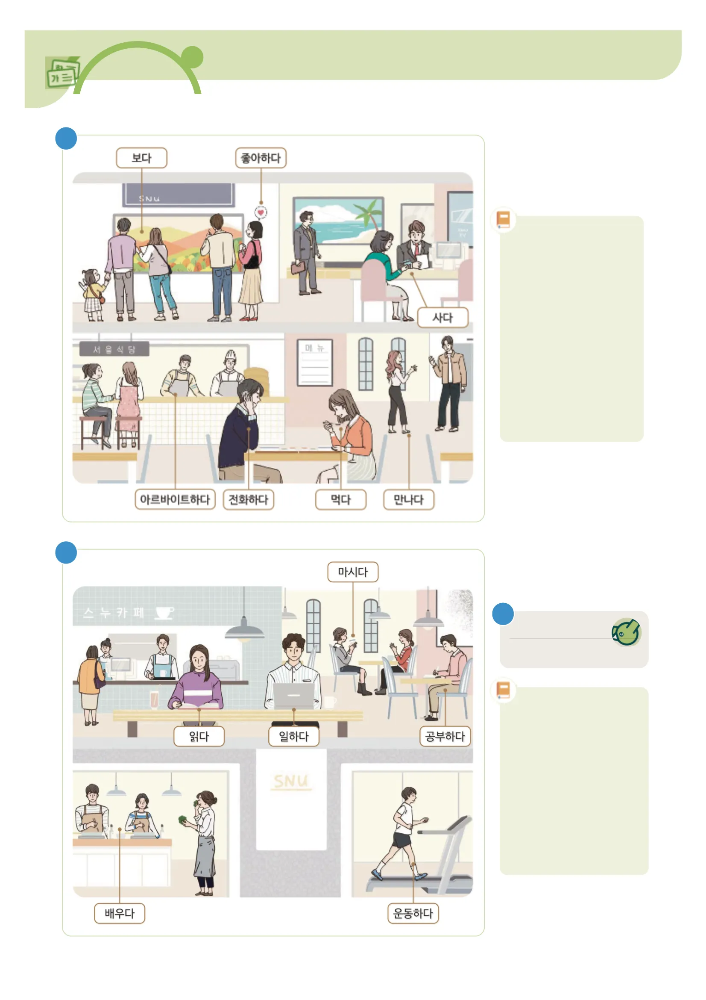
4-1Lug'at어휘저는 한국어를 공부해요Men koreys tilini o'rganaman보다ko'rmoq/qaramoq좋아하다 yoqtirmoq사다 sotib olmoq아르바이트하다yarim kun ishlamoq전화하다qo'ng'iroq qilmoq먹다 yemoq만나다 uchrashmoq이야기해 보세요▸ 지금 뭐 해요?읽다 o'qimoq일하다 ishlamoq마시다 ichmoq공부하다o'qimoq (o'rganmoq)배우다 o'rganmoq운동하다jismoniy mashq qilmoq36123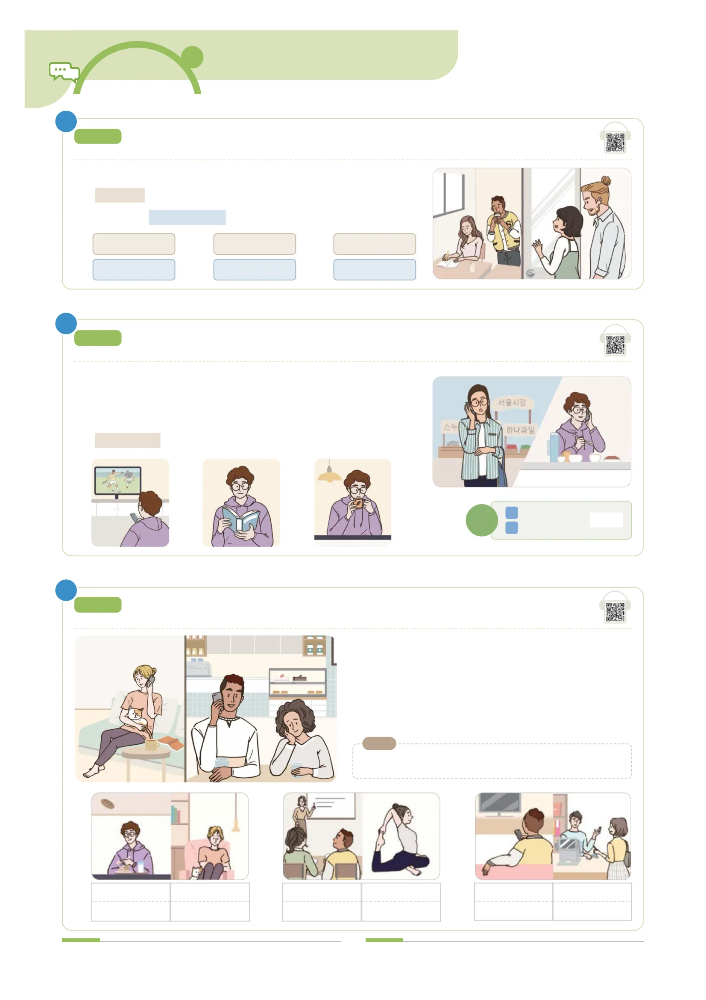
4-1Gapirish말하기말하기 1친구와 연습해 보세요.Sherigingiz bilan mashq qiling.가: 제니 씨는 지금 뭐 해요?나: 공부해요. 테오 씨는 뭐 해요?가: 테오 씨는 커피를 마셔요.1)전화하다주스, 마시다2)자다휴대폰, 보다3)일하다샌드위치, 먹다말하기 2친구와 연습해 보세요.Sherigingiz bilan mashq qiling.가: 다니엘 씨, 지금 어디에 있어요?나: 집에 있어요.가: 뭐 해요?나: 밥을 먹어요.1)2)3)동-아요/어요☞87쪽명을/를말하기 3친구와 이야기해 보세요.Sherigingiz bilan suhbatlashing.안나: 에릭 씨, 지금 집에 있어요?에릭: 아니요. 저는 카페에 있어요.안나: 친구를 만나요?에릭: 네. 친구하고 커피를 마셔요. 안나 씨는 뭐 해요?안나: 저는 집에 있어요. 책을 읽어요.1)빵집집케이크, 먹다차, 마시다2)3)• 집에 [지베] • 책을 [채글] • 읽어요 [일거요]발음지금 hozir자다 uxlamoq하고 bilan빵집 novvoyxona37문법과표현456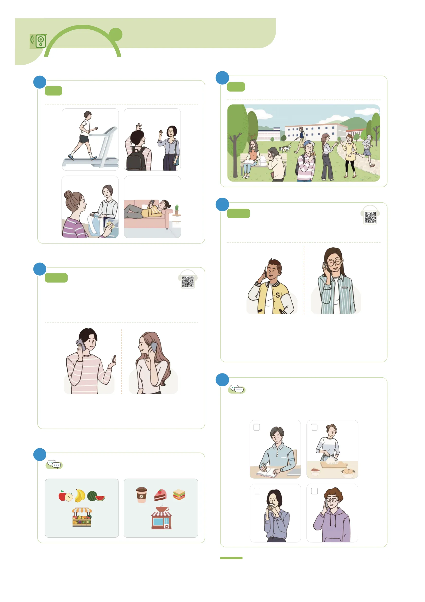
4-1Tinglash듣기준비오늘 뭐 해요?Bugun nima qilyapsiz?듣기 1민우와 제니의 대화입니다. 잘듣고 맞으면 ○,틀리면 × 하세요.Bu Minu va Jenni suhbati. Diqqat bilantinglang, to'g'ri bo'lsa ○, noto'g'ri bo'lsa ×qo'ying.1) 여자는 지금 커피를 사요.( )2) 남자는 지금 집에 없어요.( )여기에서 뭐를 사요?Bu yerda nima sotib olasiz?준비학교에서 뭐 해요?Maktabda nima qilyapsiz?듣기 2테오와 아야나의 대화입니다.잘 듣고 맞는 것을 고르세요.Bu Teo va Ayana suhbati. Diqqat bilantinglang va to'g'ri javobni tanlang.① 남자는 학교에 있어요.② 여자는 지금 숙제해요.③ 여자는 친구의 집에 있어요.매일 뭐 해요? ☑ 하고 친구하고 이야기해 보세요.Har kuni nima qilasiz? Katakka belgi qo'ying vasherigingiz bilan gaplashing.숙제하다 uy vazifasini bajarmoq같이 birga요리 ovqat pishirish오늘 bugun38789101112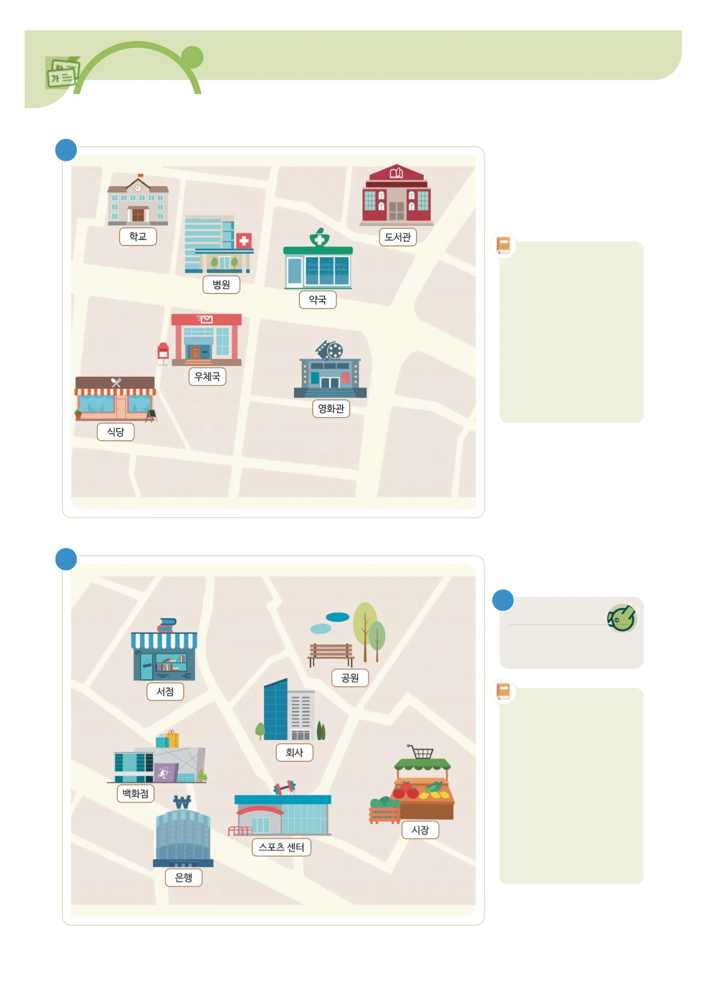
4-2Lug'at어휘오늘 회사에 가요Bugun ishga boraman학교 maktab병원 kasalxona약국 dorixona도서관 kutubxona식당 restoran우체국 pochta영화관 kinoteatr이야기해 보세요▸ 도서관에서 뭐 해요?▸ 오늘 어디에 가요?서점 kitob do'koni공원 bog'백화점 univermag회사 kompaniya은행 bank스포츠 센터sport markazi시장 bozor39123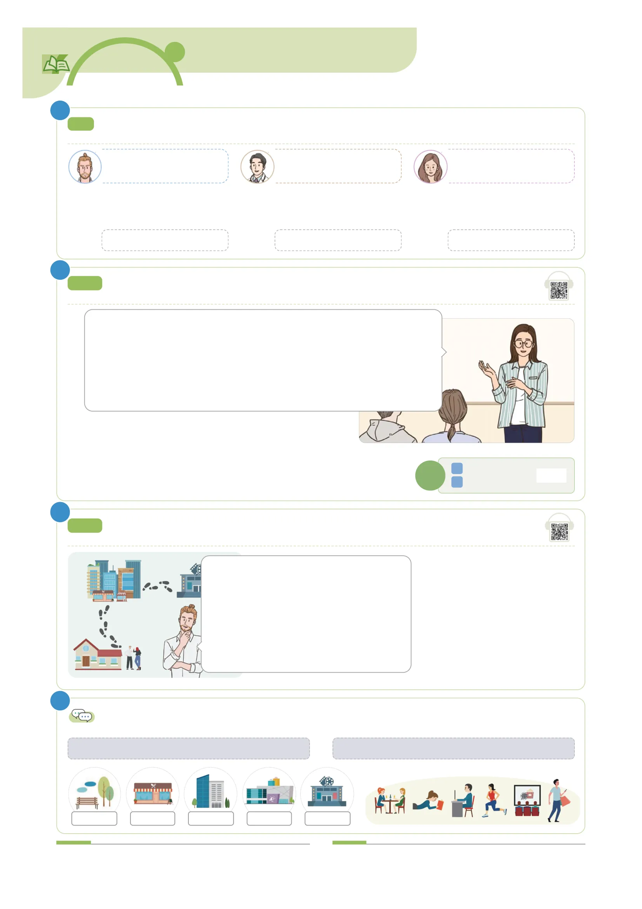
4-2O'qish읽기준비이 사람은 어디에 가요? 알맞은 것을 연결하세요.Bu odam qayerga ketyapti? Mos gaplarni bog'lang.“집에 사과가 없어요.여기에서 사과를 사요.”“저는 의사예요.여기에서 일해요.”“저는 학생이에요.여기에서 한국어를 배워요.”••••••학교에 가요.시장에 가요.병원에 가요.읽기 1아야나의 이야기입니다. 잘 읽고 맞으면 ○, 틀리면 × 하세요.Bu Ayana haqidagi matn. Diqqat bilan o'qing, to'g'ri bo'lsa ○, noto'g'ri bo'lsa × qo'ying.명에 가다/오다☞88쪽명에서1) 아야나는 학생 식당에서 밥을 먹어요.( )2) 아야나는 도서관에서 한국어를 배워요.( )읽기 2크리스는 오늘 뭐 해요? 잘 읽고 맞는 것을 고르세요.Kris bugun nima qilyapti? Diqqat bilan o'qing va to'g'ri javobni tanlang.① 크리스는 한국 영화를 봐요.② 크리스는 친구의 집에 가요.③ 크리스는 친구하고 같이 밥을 먹어요.이야기해 보세요.Sherigingiz bilan suhbatlashing.내일 어디에 가요?거기에서 뭐 해요?공원식당회사백화점영화관가다 bormoq매일 har kuni그리고 va들 -lar (ko'plik qo'shimchasi)오다 kelmoq명동 Myondong많이 ko'p영화 film내일 ertaga40문법과표현저는 서울대학교에서 한국어를 배워요.매일 학교에 가요.그리고 우리 반 친구들하고 같이 학생 식당에 가요.거기에서 밥을 먹어요.학생 식당 옆에는 도서관이 있어요.우리는 도서관에서 숙제해요.오늘 친구가 우리 집에 와요.저는 친구하고 같이 명동에 가요.명동에는 식당이 많이 있어요.우리는 식당에서 한국 음식을 먹어요.그리고 영화관에 가요.영화관은 식당 옆에 있어요.우리는 영화관에서 영화를 봐요.4567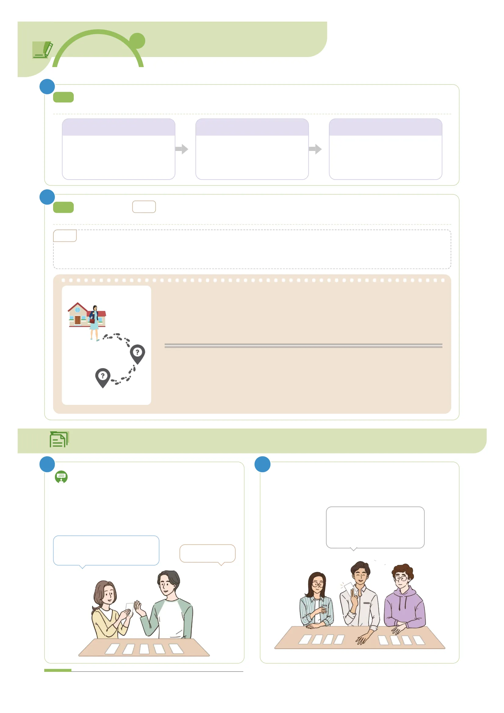
과제Topshiriq4-2Yozish쓰기준비오늘 어디에 가요? 메모해 보세요.Bugun qayerga borasiz? Qaydlaringizni yozing.어디에 가요?• 강남••누구하고 가요?• 친구• 혼자•거기에서 뭐 해요?• 옷을 사요.••쓰기메모를 보고 보기 와 같이 여러분의 하루를 써 보세요.Yozuvlaringizga qarab namunadagidek bugun nima qilganingizni yozing.저는 오늘 혼자 강남에 가요. 강남에 가게가 많이 있어요. 저는 쇼핑을 좋아해요. 그래서 강남에서옷하고 가방을 사요. 가게 옆에는 식당이 있어요. 거기에서 한국 음식을 먹어요. 그리고 집에 와요.보기친구하고 게임을 하세요.Sherigingiz bilan o'yin o'ynang.1어디에 가요? 친구의 말을 잘 듣고 맞혀 보세요.Sherigingizning ishoralarini diqqat bilan tinglang va u qayergabormoqchi ekanini toping.여기에서 한국어를 배워요.선생님하고 학생이 있어요.학교에 가요.2여기에서 뭐 해요? 모두 말해 보세요.Bu joyda qila oladigan hamma narsani aytib bering.여기는 도서관이에요.도서관에서 공부해요.도서관에서 책을 읽어요.혼자 yolg'iz옷 kiyim쇼핑 xarid qilish41891011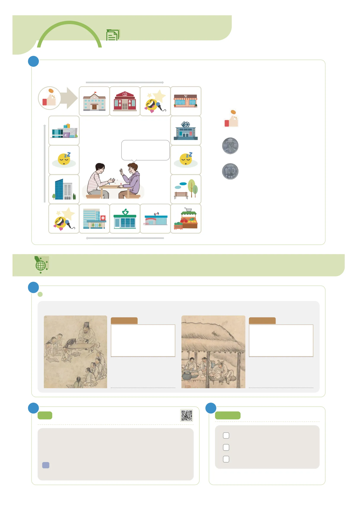
문화MadaniyatTopshiriq과제3친구하고 게임을 해 보세요.Sherigingiz bilan stol o'yini o'ynang.1)동전을 던지세요.Tanga tashlang.2)앞면이 나오면 1칸 가세요.Gerb tushsa, bir katak yuring.뒷면이 나오면 2칸 가세요.Raqam tushsa, ikki katak yuring.3)어디에 가요? 거기에서 뭐 해요? 이야기해 보세요.Qayerga ketyapsiz? U yerda nima qilasiz?Sherigingiz bilan gaplashib mashq qiling.학교에 가요.학교에서 공부해요.한국의 화가 김홍도의 그림이에요.김홍도는 사람들의 일상생활을 많이 그렸어요.작품 소개• 작품명: 서당도• 작가: 김홍도• 제작연대: 18세기 후반• 소장처: 국립중앙박물관여기는 옛날 학교예요.누가 있어요?여기에서 뭐 해요?작품 소개• 작품명: 주막• 작가: 김홍도• 제작연대: 18세기 후반• 소장처: 국립중앙박물관여기는 옛날 식당이에요.누가 있어요?여기에서 뭐 해요?발음Talaffuz받침은 뒤 음절이 모음으로 시작하면 그 음절의 첫소리로 발음됩니다.Bo'g'in oxiridagi undoshdan keyin unli kelsa, u keyingi bo'g'inga o'tib, o'shabo'g'inning birinchi tovushi sifatida talaffuz qilinadi.예가: 오늘 도서관에서 공부해요?나: 아니요. 집에서 공부해요.가: 오늘 뭐 해요?나: 서점에서책을 사요.자기 평가O'zini tekshirish지금 뭐 해요?오늘 어디에 가요?거기에서 뭐 해요?4212131415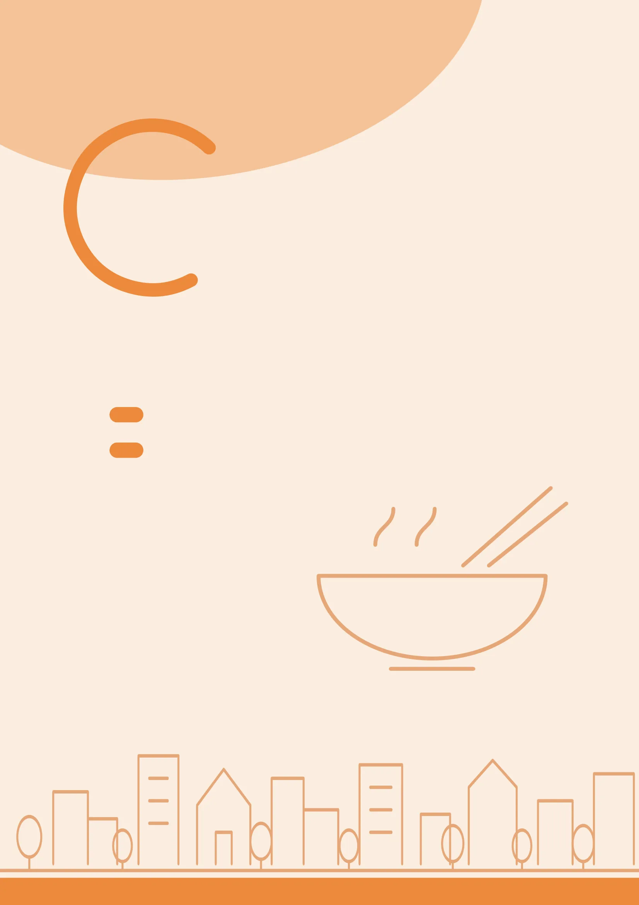
5식당5-1비빔밥하고 불고기가 맛있어요5-2주스 세 병에 오천 원이에요뭐가 맛있어요?비빔밥이 맛있어요.이 식당이 안 비싸요.커피 두 잔 주세요.이거 얼마예요?오천 원이에요.1 무슨 음식을 좋아해요?2 한국 음식이 맛있어요?
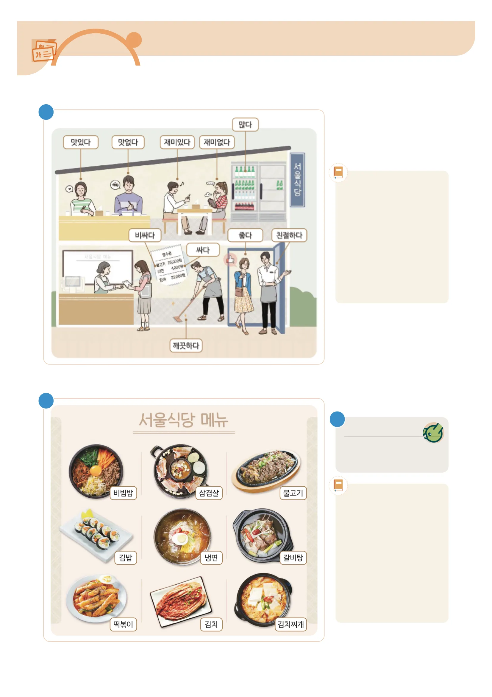
5-1Lug'at어휘비빔밥하고 불고기가 맛있어요Pibimbap va pulgogi mazali맛있다 mazali bo'lmoq맛없다 mazasiz bo'lmoq재미있다 qiziqarli bo'lmoq재미없다 zerikarli bo'lmoq많다 ko'p bo'lmoq비싸다 qimmat bo'lmoq싸다 arzon bo'lmoq좋다 yaxshi bo'lmoq친절하다 samimiy bo'lmoq깨끗하다 toza bo'lmoq이야기해 보세요▸ 오늘 뭘 먹어요?▸ 뭐가 맛있어요?비빔밥 pibimbap삼겹살 samgyopsal (qovurmago'sht)불고기 pulgogi김밥 kimbap냉면 sovuq lag'mon갈비탕 qovurg'a sho'rvasi떡볶이 tteokbokki (achchiqtaom)김치 kimchi김치찌개 kimchi sho'rvasi45123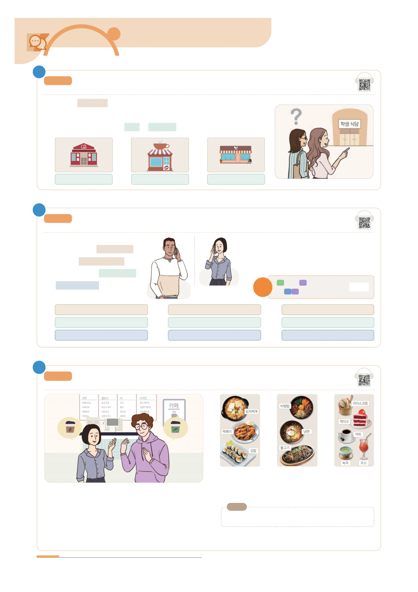
5-1Gapirish말하기말하기 1친구와 연습해 보세요.Sherigingiz bilan mashq qiling.가: 여기가 학생 식당이에요.나: 아, 그래요?가: 저는 여기에 자주 와요. 음식이 맛있어요.1)한국어 책, 많다2)커피, 싸다3)직원, 친절하다말하기 2친구와 연습해 보세요.Sherigingiz bilan mashq qiling.가: 에릭 씨, 오늘 식당에 가요?나: 아니요. 식당에 안 가요.가: 그럼 어디에서 밥을 먹어요?나:집에서 먹어요.명이/가 형-아요/어요☞89쪽안 동형1)카페에 가다친구를 만나다친구 집, 만나다2)도서관에서 숙제하다숙제하다카페, 숙제하다3)스포츠 센터에 가다운동하다공원, 운동하다말하기 3친구와 이야기해 보세요.Sherigingiz bilan suhbatlashing.1)2)3)다니엘:유진 씨, 여기 뭐가 맛있어요?유 진: 커피가 맛있어요. 다니엘 씨는 커피를 좋아해요?다니엘:아니요. 저는 커피를 안 마셔요.유 진: 그럼 뭘 좋아해요?다니엘:저는 차를 좋아해요. 녹차를 자주 마셔요.• 좋아해요 [조아해요]발음자주 tez-tez직원 xodim46문법과표현456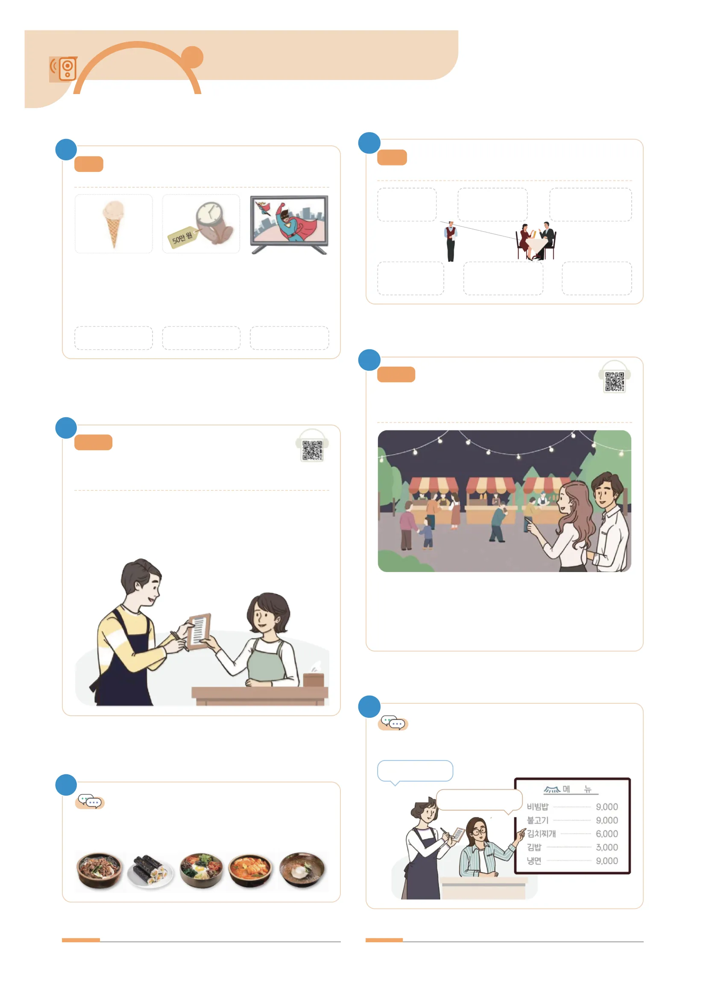
5-1Tinglash듣기준비알맞은 것을 연결하세요.Rasmni to'g'ri so'z bilan moslang.••••재미있어요•맛있어요•비싸요듣기 1여기는 식당입니다. 잘 듣고 맞으면 ○, 틀리면 × 하세요.Bu restoran. Diqqat bilan tinglang, to'g'ribo'lsa ○, noto'g'ri bo'lsa × qo'ying.1) 치즈김밥이 맛있어요.( )2) 여자는 라면을 안 먹어요.( )여러분은 뭘 좋아해요? 뭐가 맛있어요?오늘 뭘 먹어요?Nimani yeyishni yaxshi ko'rasiz? Nima mazali? Bugunnima yeysiz?준비누가 말해요? 잘 읽고 연결하세요.Dialogni to'ldirish uchun gaplarni moslang.여기요.어서 오세요.이 식당은뭐가 맛있어요?감사합니다.안녕히 가세요.비빔밥하고냉면 주세요.듣기 2제니와 하이의 대화입니다. 잘듣고 맞는 것을 고르세요.Bu Jenni va Hay suhbati. Diqqat bilantinglang va to'g'ri javobni tanlang.① 남자는 우동을 좋아해요.② 이 식당의 음식이 비싸요.③ 이 식당에 사람이 없어요.여기는 식당입니다. 손님과 식당 주인이되어 이야기해 보세요.Bu restoran. Mijoz va restoran egasi rolini ijro eting.어서 오세요.뭐가 맛있어요?치즈김밥 pishloqli kimbap아주 juda라면 ramen (lag'mon)우동 udon그런데 aytgancha47789101112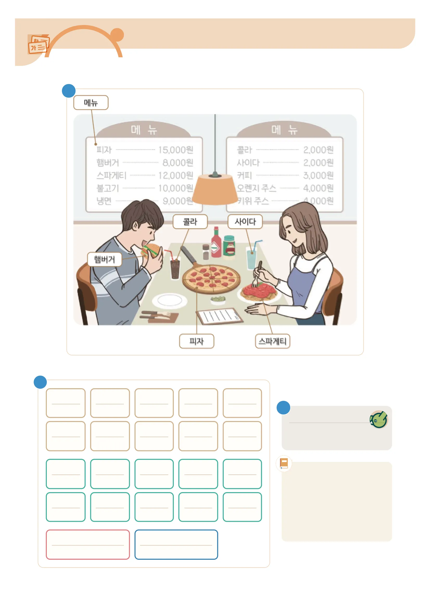
5-2Lug'at어휘주스 세 병에 오천 원이에요3 shisha sharbat 5 000 von1일2이3삼4사5오6육7칠8팔9구10십10십20이십30삼십40사십50오십60육십70칠십80팔십90구십100백1,000천10,000만이야기해 보세요▸ 한국어로 숫자를 말해 보세요.메뉴 menyu콜라 kola사이다 gazli suv햄버거 gamburger피자 pitsa스파게티 spagetti48123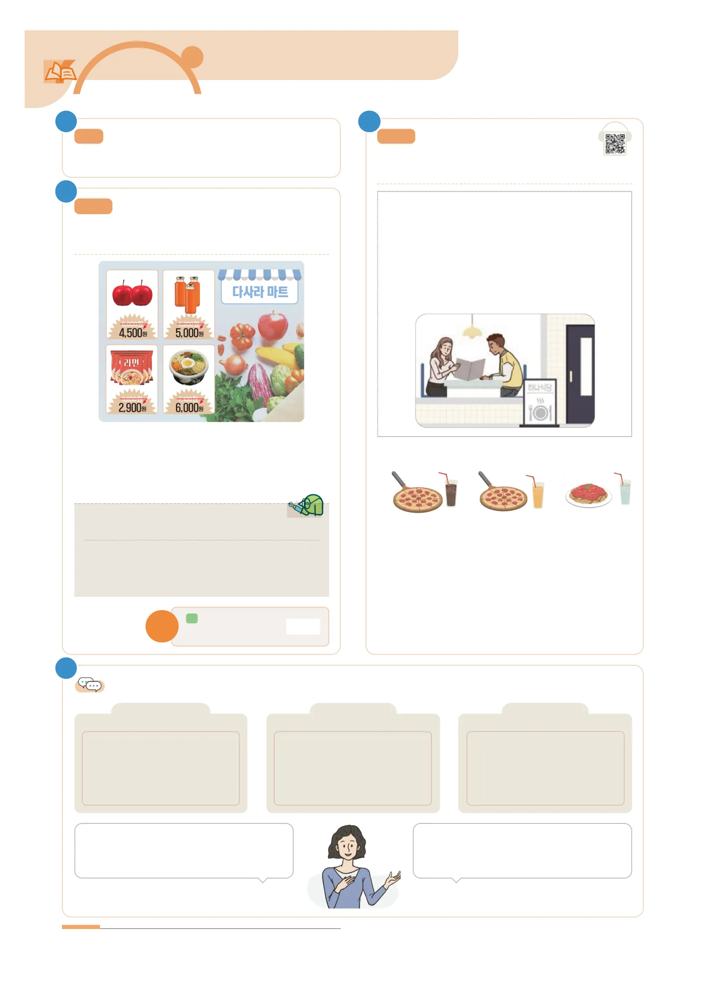
5-2O'qish읽기준비여러분은 가게에서 뭘 많이 사요?그거는 얼마예요?Do'kondan odatda nima sotib olasiz? Qancha turadi?읽기 1마트 광고입니다. 잘 읽고 맞는 것을고르세요.Bu supermarket e'loni. Diqqat bilan o'qing va to'g'rijavobni tanlang.① 사과 두 개에 육천 원이에요.② 주스 세 병에 오천 원이에요.③ 라면 다섯 개에 천 구백 원이에요.명 개/병/잔/그릇☞90쪽가격가격을 물을 때Narxini so'raganda이거는 얼마예요? Bu qancha turadi?모두 얼마예요? Hammasi qancha turadi?한 개에 얼마예요? Bittasi qancha?읽기 2제니의 이야기입니다. 잘 읽고질문에 답해 보세요.Bu Jenni haqidagi matn. Diqqat bilano'qing va savollarga javob bering.저는 오늘 테오 씨하고 하나식당에 가요. 하나식당은 학교 옆에 있어요. 피자하고 스파게티가아주 맛있어요. 우리는 피자를 먹어요. 피자 한판에 만 원이에요. 피자가 싸요. 그리고 저는 콜라를 한 잔 마셔요. 테오 씨는 콜라를 안 마셔요.그래서 주스를 마셔요. 모두 만 오천 원이에요.1 테오는 오늘 식당에서 뭘 먹어요?①②③2 맞는 것을 고르세요.① 피자는 15,000원이에요.② 테오는 식당에서 일해요.③ 식당은 학교 옆에 있어요.그림을 보고 이야기해 보세요.Rasmga qarab sherigingiz bilan suhbatlashing.커피4,500원딸기 케이크5,400원오렌지 주스3,600원차3,500원이태원 커피숍토마토 피자18,000원스파게티12,900원치즈 햄버거5,900원콜라2,000원나폴리 피자불고기15,000원냉면9,500원콜라1,000원사이다1,000원아리랑 식당10,000원이 있어요.혼자 식당에 가요.뭘 먹어요? 모두 얼마예요?30,000원이 있어요.친구하고 같이 식당에 가요.뭘 먹어요? 모두 얼마예요?판 butun pitsa uchun sanoq so'zi그래서 shuning uchun모두 hammasi49문법과표현4567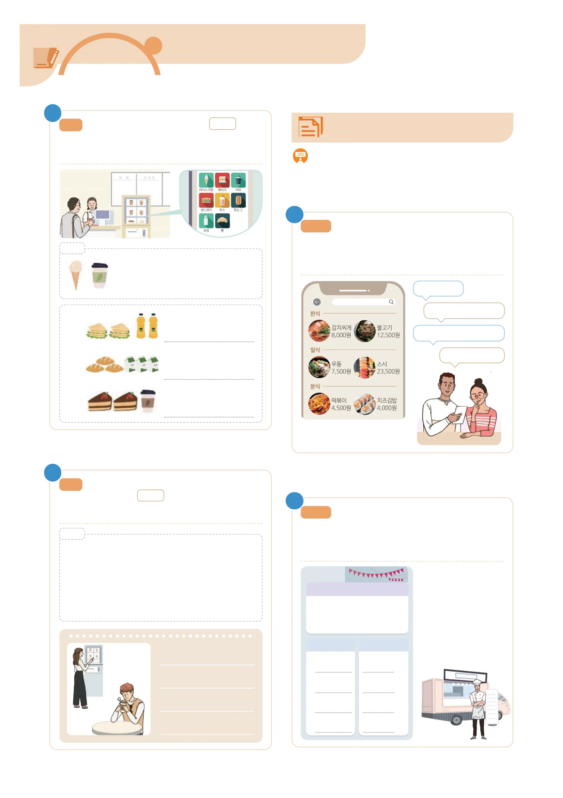
친구가 만든 식당에 가서 주문해 보세요.Do'stingizning restoranida ovqat buyurtma qiling.5-2Yozish쓰기준비여러분은 카페에서 뭘 사요? 보기와같이 써 보세요.Kafeda nima sotib olasiz? Namunadagidek gaplaryozing.1)2)3)저는 아이스크림 한 개하고 녹차한 잔을 사요.보기쓰기여러분은 카페에 자주 가요? 카페에서뭘 먹어요? 보기와 같이 써 보세요.Kafega tez-tez borasizmi? Kafeda nima ichasiz/yeysiz?Namunadagidek o'z tajribangiz haqida yozing.저는 카페에 자주 가요. 카페는 편의점 옆에 있어요. 저는 카페에서 케이크하고 커피를 사요. 케이크가 맛있어요. 저는 녹차를 안 마셔요. 그래서커피를 사요. 커피 한 잔에 삼천 원이에요. 커피가 싸요.보기Topshiriq과제과제 1여러분은 식당에서 뭘 자주 먹어요?그 음식은 얼마예요?친구와 같이 말해 보세요.Restoranda ko'pincha nima yeysiz? Qancha turadi?Sherigingiz bilan gaplashing.뭘 먹어요?김치찌개를 먹어요.김치찌개가 얼마예요?팔천 원이에요.과제 2여러분은 요리사예요.여러분의 가게 이름이 뭐예요?메뉴하고 가격을 써 보세요.Siz oshpazsiz. Do'koningiz nomi nima? Do'koningizmenyusi va narxlarini yozing.가게 이름메뉴••••가격원원원원50891011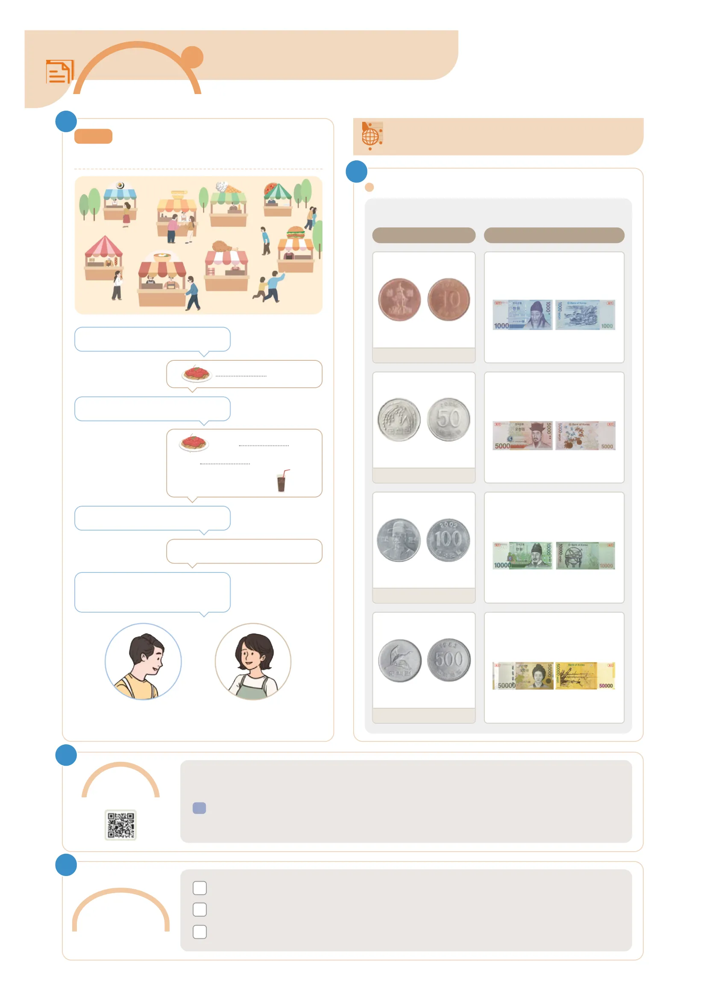
5-2Topshiriq과제과제 3친구의 가게에 가서 음식을 주문하세요.Do'stingizning do'koniga borib ovqat buyurtmaqiling.어서 오세요. 있어요?네. 있어요. 아주 맛있어요. 그럼 하고 주세요.모두 얼마예요? 만 원이에요.여기 있어요.감사합니다.잠깐만 기다리세요.Madaniyat문화한국의 ‘돈’을 아세요?여러분 지갑에는 한국 동전과 지폐가 있어요?동전지폐십 원천 원오십 원오천 원백 원만 원오백 원오만 원받침 ‘ㅎ, ㄶ, ㅀ’은 뒤에 모음이 오면 [ㅎ]이 발음되지 않습니다.‘ㅎ, ㄶ, ㅀ’ oxirgi undoshlaridan keyin ‘ㅇ’ kelsa, [ㅎ] talaffuz qilinmaydi.예가: 불고기를 좋아해요?나: 네. 불고기가 좋아요.가: 식당에 사람이 많아요?나: 네. 많아요.발음Talaffuz뭐가 맛있어요?요즘 커피 한 잔에 얼마예요?한국 음식을 매일 먹어요?자기 평가O'zini tekshirish5112131415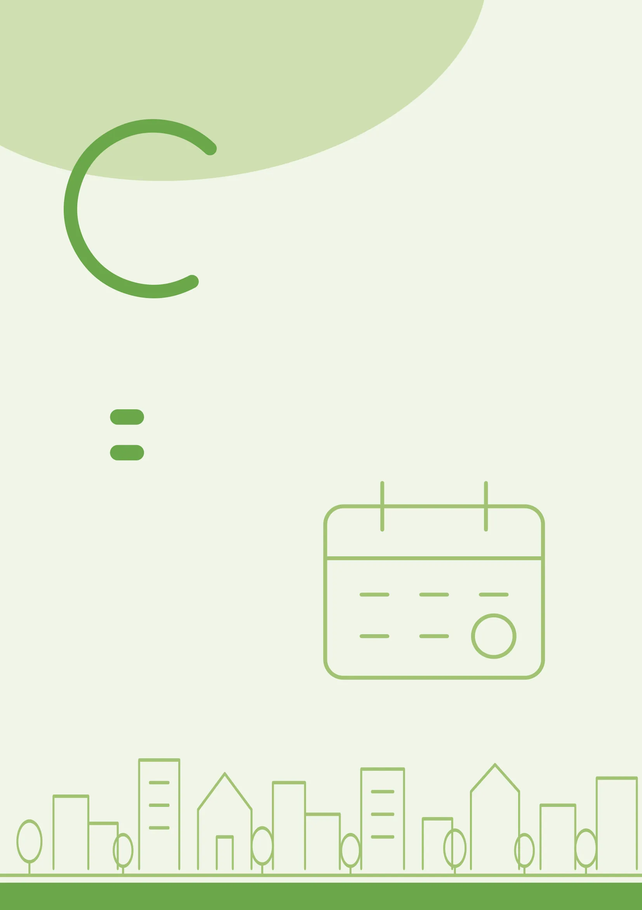
6날짜와 요일6-1토요일에 친구를 만나요6-2친구들하고 밥을 먹을 거예요오늘이 무슨 요일이에요?토요일이에요.주말에 뭐 할 거예요?친구를 만날 거예요.저도 친구를 만날 거예요.일요일에만 쉬어요.1 오늘이 무슨 요일이에요?2 주말에 뭐 할 거예요?
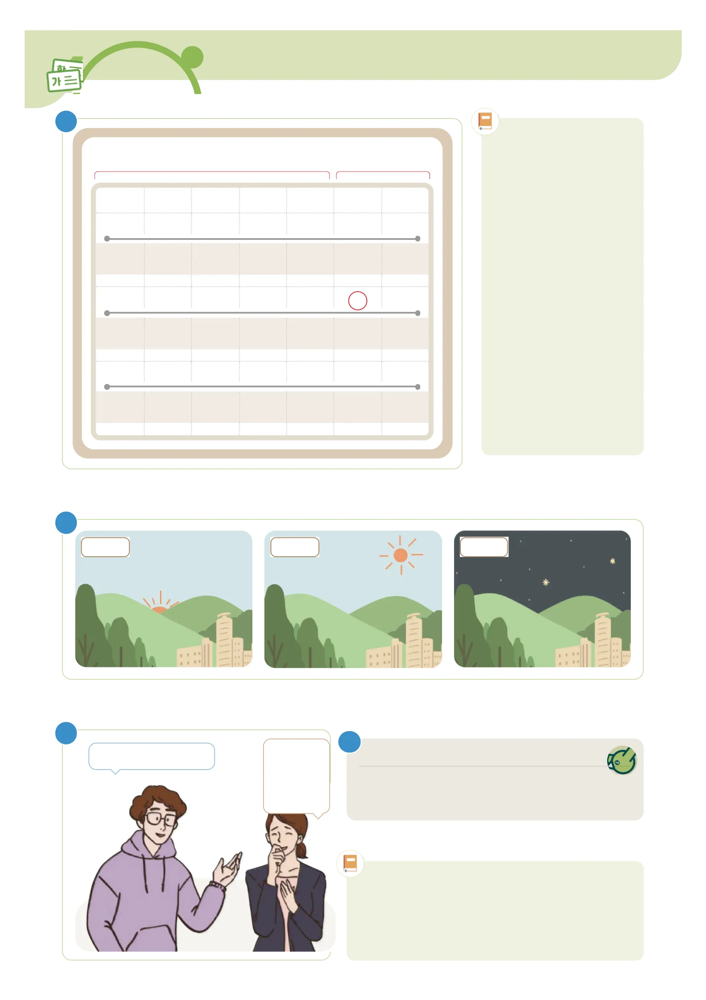
6-1Lug'at어휘토요일에 친구를 만나요Shanba kuni do'stim bilan uchrashaman10월평일주말월요일화요일수요일목요일금요일토요일일요일45678910지난주11121314151617이번 주어제오늘내일18192021222324다음 주월요일 dushanba화요일 seshanba수요일 chorshanba목요일 payshanba금요일 juma토요일 shanba일요일 yakshanba평일 ish kuni주말 dam olish kunlari어제 kecha오늘 bugun내일 ertaga아침점심저녁내일 시간이 있어요?미안해요.시간이없어요.이야기해 보세요▸ 오늘이 무슨 요일이에요?▸ 주말에 시간이 있어요?지난주 o'tgan hafta이번 주 shu hafta다음 주 kelasi hafta아침 ertalab점심 tush payti저녁 kechqurun시간 vaqt541234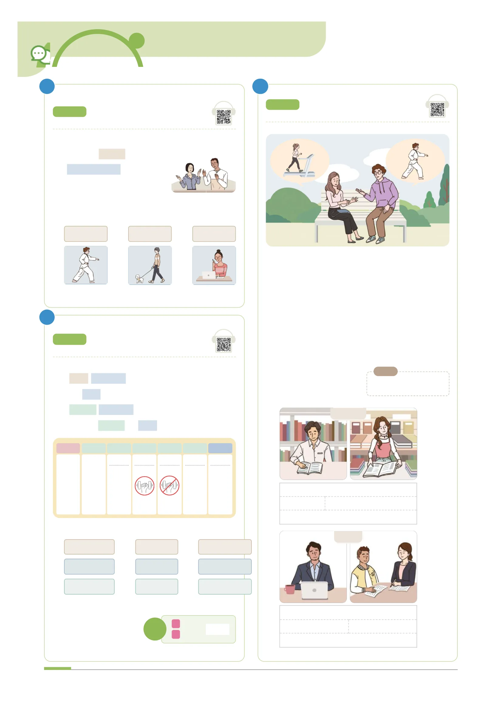
6-1Gapirish말하기말하기 1친구와 연습해 보세요.Sherigingiz bilan mashq qiling.가: 에릭 씨, 금요일에 뭐 해요?나: 친구를 만나요. 유진 씨는뭐 해요?가: 집에서 쉬어요.1)목요일2)주말3)오늘말하기 2친구와 연습해 보세요.Sherigingiz bilan mashq qiling.가: 오늘 운동해요?나: 네. 해요.가: 내일도 운동해요?나: 아니요. 내일은 안 해요.1)오늘 저녁도서관에 가다내일2)수요일약속이 있다일요일3) 이번 주 화요일친구를 만나다다음 주 금요일명에☞91쪽명도일요일월요일화요일수요일목요일금요일토요일12오늘345말하기 3친구와 이야기해 보세요.Sherigingiz bilan suhbatlashing.다니엘: 제니 씨, 토요일에 뭐 해요?제 니: 집에서 쉬어요. 그리고 스포츠 센터에서운동해요.다니엘: 토요일에도 스포츠 센터에 가요?제 니: 네. 저는 운동을 좋아해요. 다니엘 씨는 뭐해요?다니엘: 학교에서 태권도를 배워요. 저도 운동을좋아해요.1)일요일집, 쉬다도서관, 책을 읽다서점, 책을 사다2)• 학교에서 [학꾜에서]발음일요일주말태권도 taekvondo약속 uchrashuv, va'da55문법과표현5676-1Tinglash듣기준비무슨 요일을 좋아해요?Haftaning qaysi kunini yaxshi ko'rasiz?일요일월요일화요일수요일목요일금요일토요일듣기 1자밀라는 뭐 해요? 잘 듣고연결하세요.Jamila nima qilyapti? Diqqat bilan tinglangva hafta kunini rasm bilan moslang.월요일화요일수요일목요일금요일토요일일요일•••••••••••①②③④평일에 보통 뭐 해요?Ish kunlari odatda nima qilasiz?준비오늘 저녁에 시간이 있어요? 뭐 해요?Bugun kechqurun bo'shmisiz? Nima qilmoqchisiz?듣기 2하이와 나나의 대화입니다. 잘듣고 맞으면 ○, 틀리면 ×하세요.Bu Hay va Nana suhbati. Diqqat bilantinglang, to'g'ri bo'lsa ○, noto'g'ri bo'lsa ×qo'ying.1) 제니는 도서관에 가요.( )2) 나나도 친구하고 숙제해요.( )달력을 보고 친구하고 이야기해 보세요.Taqvimga qarab sherigingiz bilan suhbatlashing.오늘내일수요일금요일주말이번 주 일요일6월월화수목금토일2345678오늘오늘 뭐 해요?영화를 봐요.무슨 qaysi요일 hafta kuni노래방 norebang (karaoke)568910111213
6-2Lug'at어휘친구들하고 밥을 먹을 거예요Do'stlarim bilan ovqatlanmoqchiman123456789 10 11 12 13 14 1516 17 18 19 20 21 2223 24 25 26 27 28 2930 31123456789 10 11 1213 14 15 16 17 18 1920 21 22 23 24 25 2627 28123456789 10 11 1213 14 15 16 17 18 1920 21 22 23 24 25 2627 28 29 30 3112345678910 11 12 13 14 15 1617 18 19 20 21 22 2324 25 26 27 28 29 30123456789 10 11 12 13 1415 16 17 18 19 20 2122 23 24 25 26 27 2829 30 31123456789 10 1112 13 14 15 16 17 1819 20 21 22 23 24 2526 27 28 29 3012345678910 11 12 13 14 15 1617 18 19 20 21 22 2324 25 26 27 28 29 3031123456789 10 11 12 1314 15 16 17 18 19 2021 22 23 24 25 26 2728 29 30 31123456789 1011 12 13 14 15 16 1718 19 20 21 22 23 2425 26 27 28 29 30123456789 10 11 12 13 14 1516 17 18 19 20 21 2223 24 25 26 27 28 2930 31123456789 10 11 1213 14 15 16 17 18 1920 21 22 23 24 25 2627 28 29 30123456789 1011 12 13 14 15 16 1718 19 20 21 22 23 2425 26 27 28 29 30 31월일923오늘이 며칠이에요?구월 이십삼 일이에요.일월이월삼월사월오월유월칠월팔월구월시월십일월십이월구경하다등산하다빨래하다사진을 찍다산책하다쇼핑하다청소하다일월 yanvar이월 fevral삼월 mart사월 aprel오월 may유월 iyun칠월 iyul팔월 avgust구월 sentabr시월 oktabr십일월 noyabr십이월 dekabr월 oy일 kun며칠 nechanchi sana이야기해 보세요▸ 생일이 며칠이에요?▸ 어디에서 사진을 많이 찍어요?구경하다 tomosha qilmoq등산하다 tog'ga chiqmoq빨래하다 kir yuvmoq사진을 찍다 suratga olmoq산책하다 sayr qilmoq쇼핑하다 xarid qilmoq청소하다 tozalamoq57→→→→→→→→→→→123
6-2O'qish읽기준비무슨 요일에 시간이 있어요?Haftaning qaysi kuni bo'shsiz?읽기 1에릭의 문자 메시지입니다. 잘 읽고 맞는 것을 고르세요.Bu Erikning xabari. Diqqat bilan o'qing va to'g'ri javobni tanlang.① 오늘은 시월 십 일이에요.② 엥흐는 금요일에 시간이 있어요.③ 에릭은 금요일에 식당에 갈 거예요.엥흐 씨, 10월 10일에 시간이 있어요?친구들하고 하나식당에서밥을 먹을 거예요.안나 씨하고 다니엘 씨도 올 거예요.일월화수목금토56오늘789101110월읽기 2마리의 이야기입니다. 잘 읽고 질문에 답해 보세요.Bu Mari haqidagi matn. Diqqat bilan o'qing va savollarga javob bering.저는 주말에 항상 아르바이트를 해요. 그런데 다음 주에 고향에서 친구가 와요.그래서 다음 주에만 아르바이트를 안 해요. 금요일에 친구하고 제주도에 갈 거예요.제주도에서 등산할 거예요. 바다에도 갈 거예요. 우리는 사진을 많이 찍을 거예요.8월 23일에 서울에 올 거예요.1 마리는 제주도에서 뭐 할 거예요? 모두 고르세요.①②③2 맞는 것을 고르세요.① 마리는 주말에 보통 등산해요.② 마리의 친구는 다음 주에 한국에 와요.③ 마리는 친구하고 같이 바다에만 갈 거예요.여러분의 계획을 이야기해 보세요.Rejalaringizni sherigingiz bilan o'rtoqlashing.동-(으)ㄹ 거예요☞92쪽명만✐ 어디에 갈 거예요?이태원인사동부산제주도✐ 언제 갈 거예요?날짜와 요일을 써 보세요.월일요일아침점심저녁✐ 누구하고 갈거예요?혼자친구✐ 거기에서 뭐 할거예요?6월 8일 토요일은 크리스 생일이에요. 크리스 씨는 금요일에만 시간이 있어요. 그래서우리는 금요일 저녁에 같이 인사동에 갈 거예요. 한국 식당에서 밥을 먹을 거예요. 그리고구경할 거예요. 사진도 많이 찍을 거예요.밥 ovqat (taom)항상 doim그런데 lekin제주도 Chejudo oroli바다dengiz 보통 odatda이태원 Itewon인사동 Insadong부산 Pusan언제 qachon날짜 sana58문법과표현4567
6-2Yozish쓰기준비주말에 어디에 갈 거예요? 거기에서 뭐할 거예요? 보기 와 같이 써 보세요.Dam olish kuni biror joyga borasizmi? U yerda nimaqilasiz? Dam olish kuni rejalaringizni yozing.도서관시장영화관백화점공원1)2)3)저는 도서관에 갈 거예요. 도서관에서 한국어책을 읽을 거예요.보기쓰기다음 주에 뭐 할 거예요? 메모하고보기 와 같이 써 보세요.Kelasi hafta nima qilasiz? Namunadagidek rejalaringizniyozing.월월요일화요일수요일목요일금요일토요일일요일에릭,쇼핑대사관X공원,산책한국드라마나나,노래방청소 저는 월요일하고 토요일에 약속이 있어요.친구를 만날 거예요. 화요일에는 대사관에 갈거예요. 목요일에는 공원에서 산책할 거예요.공원은 우리 집 옆에 있어요. 금요일하고일요일에는 집에 있을 거예요. 다음 주에는수요일에만 시간이 있어요.보기과제Topshiriq여러분의 계획을 이야기해 보세요.Rejalaringiz haqida sherigingiz bilan gaplashing.1 다음 그림을 보고 아래의 표현을 모두사용해서 이야기해 보세요.Rasmlarga qarab, quyidagi barcha iboralardan foydalanibMarining kun tartibini tasvirlang.배우다그리고등산하다만나다가르치다쇼핑하다그래서한국어평일월요일, 수요일금요일토요일일요일다음 주 월요일대사관 elchixona가르치다 o'rgatmoq598910
Topshiriq과제과제 2여러분은 이번 주에 뭐 할 거예요?메모하고 이야기해 보세요.Shu hafta nima qilasiz? Qayd qiling va sherigingizbilan gaplashing.월 일(요일)월 일(요일)월 일(요일)월 일(요일)과제 3친구는 뭐 할 거예요? 친구이야기를 듣고 메모해 보세요.Sherigingiz nima qilmoqchi? Uning rejalarini tinglab,qayd qiling.월월요일화요일수요일목요일금요일토요일일요일일일일일일일일문화Madaniyat문화가 있는 날, 마지막 주 수요일매달 마지막 주 수요일은 ‘문화가 있는 날’이에요. 영화관, 공연장, 스포츠 경기장,전시회에서 할인을 받을 수 있어요. 여러분은이번 달 ‘문화가 있는 날’에 어디에 가고 싶어요?https://www.culture.go.kr영화표 2장 주세요.네. 오늘은50% 할인입니다.와, 오늘무슨 날이에요?마지막 주 수요일,‘문화가 있는 날’이에요.발음Talaffuz받침 ‘ㄱ’ 뒤에 오는 ‘ㄱ, ㄷ, ㅂ, ㅅ, ㅈ’은 [ㄲ, ㄸ, ㅃ, ㅆ, ㅉ]로 발음합니다.‘ㄱ’ dan keyin ‘ㄱ, ㄷ, ㅂ, ㅅ, ㅈ’ kelsa, ular [ㄲ, ㄸ, ㅃ, ㅆ, ㅉ] deb talaffuz qilinadi.예가: 오늘 어디에 가요?나: 학교에 가요.가: 식당에서 밥을 먹어요?나: 아니요. 기숙사에서 밥을 먹어요.자기 평가O'zini tekshirish생일이 며칠이에요?오늘이 무슨 요일이에요?내일 뭐 할 거예요?601112131415
7시간7-1보통 몇 시에 일어나요?7-2어제 한강공원에 갔어요
지금 몇 시예요?두 시 반이에요.몇 시에 일어나요?일곱 시에 일어나요.어제 뭐 했어요?영화를 봤어요.1 지금 몇 시예요?2 어제 뭐 했어요?
7-1Lug'at어휘보통 몇 시에 일어나요?Odatda soat nechada turasiz?일어나다세수하다이를 닦다화장하다옷을 입다샤워하다요리하다이야기하다이야기해 보세요▸ 누구하고 많이 이야기해요?▸ 주말에 일찍 일어나요? 늦게 일어나요?일어나다 turmoq (uyg'onmoq)세수하다 yuz yuvmoq이를 닦다 tish yuvmoq화장하다 pardoz qilmoq옷을 입다 kiyinmoq샤워하다 dush qabul qilmoq요리하다 ovqat pishirmoq이야기하다 gaplashmoq빨리조금일찍천천히많이늦게빨리 tez천천히 sekin조금 ozgina많이 ko'p일찍 erta늦게 kech63123
7-1Gapirish말하기말하기 1친구와 연습해 보세요.Sherigingiz bilan mashq qiling.가: 하이 씨는 보통 몇 시에 일어나요?나: 8시에 일어나요.가: 그래요? 저도 8시에 일어나요. 그럼 몇 시에 자요?나: 11시쯤 자요.1)9시1시2)7시 30분10시3)6시 30분12시 30분말하기 2친구와 연습해 보세요.Sherigingiz bilan mashq qiling.가: 제니 씨, 내일 뭐 해요?나: 요가 수업이 있어요.가: 몇 시에 요가 수업을 해요?나: 6시부터 7시까지 해요.1)2)3)시간☞93쪽명부터 명까지말하기 3친구와 이야기해 보세요.Sherigingiz bilan suhbatlashing.엥흐: 내일 뭐 할 거예요?제니: 크리스 씨하고 인사동에 갈 거예요.요리 수업이 있어요.엥흐: 아, 그래요? 몇 시부터 몇 시까지 요리를 배워요?제니: 4시부터 5시까지 배워요.엥흐 씨는 내일 뭐 할 거예요?엥흐: 저는 아침에 산에 갈 거예요.그리고 저녁에 친구를 만날 거예요.1)2)수요일제니: 영어를 가르치다영어 수업이 있다2시 ~ 4시엥흐: 아침, 회의하다저녁, 스포츠 센터에 가다금요일제니: 영화관영화를 보다6시 30분 ~ 8시엥흐: 점심, 도서관에 가다저녁, 산책하다• 몇 시 [멷씨]• 5시 [다섣씨]발음쯤 taxminan요가 yoga회의하다 majlis o'tkazmoq64문법과표현456
7-1Tinglash듣기준비지금 몇 시예요?Hozir soat necha?()()듣기 1마리와 에릭의 대화입니다. 잘듣고 질문에 답하세요.Bu Mari va Erik suhbati. Diqqat bilantinglang va savollarga javob bering.1맞으면 ○, 틀리면 × 하세요.1) 여자는 내일 시간이 있어요.2) 여자는 일본어 선생님이에요.2여자는 언제 수업이 있어요? 쓰세요.화요일하고 목요일( )부터 ( )까지수업이 있어요.토요일에 보통 뭐 해요?Shanba kuni odatda nima qilasiz?토요일에 보통 뭐 해요?집 근처 공원에서 산책해요.저녁 8시쯤 공원에 가요.준비점심에 보통 뭐 해요?Tushdan keyin odatda nima qilasiz?()()듣기 2안나의 이야기입니다. 잘 듣고질문에 답하세요.Bu Anna haqidagi matn. Diqqat bilantinglang va savollarga javob bering.1안나는 무엇에 대해 이야기해요?① ‘나’의 한국 친구② ‘나’의 한국 생활③ ‘나’의 한국어 수업2맞으면 ○, 틀리면 × 하세요.1) 안나는 9시에 학교에 가요.2) 안나는 5시부터 숙제를 해요.내일 뭐 해요? 다음을 쓰고 이야기해 보세요.Ertaga nima qilasiz? Rejalaringizni quyida yozing vasherigingiz bilan gaplashing.월 일 요일8:00 ~ 10:0010:00 ~ 12:00 3:00 ~ 6:00 9:00 ~ 11:00내일은 월 일이에요. 요일이에요.저는 시부터 시까지 .수업 dars요즘 shu kunlarda근처 yaqin atrofda생활 hayot65789101112
7-2Lug'at어휘어제 한강공원에 갔어요Kecha Hangang bog'iga bordim수업이 끝나다시험이 끝나다여행하다캠핑을 하다이야기해 보세요▸ 수업이 끝나고 뭐 해요?▸ 무슨 운동을 해요?수업이 끝나다 dars tugamoq시험이 끝나다 imtihon tugamoq여행하다 sayohat qilmoq캠핑을 하다 lagerga (sayrga)chiqmoq축구하다 futbol o'ynamoq농구하다 basketbol o'ynamoq야구하다 beysbol o'ynamoq수영하다 suzmoq테니스 치다 tennis o'ynamoq골프 치다 golf o'ynamoq축구하다농구하다야구하다수영하다테니스 치다골프 치다66123
7-2O'qish읽기준비여러분은 친구하고 언제 만나요? 보통 뭐 해요?Do'stlaringiz bilan qachon uchrashasiz? Odatda nima qilasiz?읽기 1제니의 이야기입니다. 잘 읽고 맞는 것을 고르세요.Bu Jenni haqidagi matn. Diqqat bilan o'qing va to'g'ri javobni tanlang.토요일에 우리 반 친구 아야나 씨하고 한강 캠핑장에서 캠핑을 했어요. 아야나 씨가 요리를 했어요. 정말 맛있었어요. 밥을 먹고 농구했어요.재미있었어요. 다음 주에는 아야나 씨하고 여행할 거예요.① 제니는 주말에 친구를 만났어요.② 제니는 농구를 하고 밥을 먹었어요.③ 제니는 여행도 하고 캠핑도 할 거예요.읽기 2다니엘의 일기입니다. 잘 읽고 질문에 답해 보세요.Bu Danielning kundaligi. Diqqat bilan o'qing va savollarga javob bering.1다니엘은 토요일에 어디에 갔어요? 쓰세요.➜➜➜집2맞는 것을 고르세요.① 다니엘은 오늘 경복궁에 갈 거예요.② 다니엘은 인사동에서 한복을 샀어요.③ 다니엘은 한복을 입고 사진을 찍었어요.어제는 토요일이었어요. 저는 아침에 일찍 민우 씨를만났어요. 먼저 한복 가게에 갔어요. 한복 가게에서 한복을 빌렸어요. 우리는 한복을 입고 경복궁에 갔어요. 경복궁을 구경하고 인사동에도 갔어요. 우리는 사진도 많이찍었어요. 밤 9시까지 민우 씨하고 놀았어요. 10시쯤 집에 왔어요. 정말 재미있었어요.< 경복궁 >< 인사동 >어제 수업이 끝나고 뭐 했어요?Kecha darsdan keyin nima qildingiz?동-고☞94쪽동형-았어요/었어요어제 1시에 수업이 끝났어요. 수업이 끝나고 친구하고 같이 학생 식당에 갔어요. 학생 식당에서 비빔밥하고 떡볶이를 먹었어요. 아주 맛있었어요. 밥을 먹고 우리는 같이공원에 갔어요. 공원에서 농구했어요. 재미있었어요.한강 Hangang (Han daryosi)캠핑장 lager (chodir tikish joyi)정말 rostdan먼저 birinchi한복 hanbok (koreys milliy kiyimi)빌리다 ijaraga olmoq경복궁 Kyonbokkun saroyi67문법과표현4567
지난주에 한 일에 대해 이야기해 보세요.O'tgan hafta nima qilganingiz haqida sherigingiz bilan gaplashing.7-2Yozish쓰기준비지난주 주말에 뭐 했어요? 메모해 보세요.O'tgan dam olish kunlari nima qildingiz? Qaydlaringizni yozing.시간뭐했어요?어땠어요?아침10시일어났어요.점심점심을 먹고 영화를 봤어요.영화가 재미있었어요.저녁친구하고 강남에서 밥을 먹었어요.밤12시샤워하고 잤어요.쓰기주말에 뭐 했어요? 메모를 보고 보기 와 같이 써 보세요.Dam olish kunlari nima qildingiz? Yuqoridagi qaydlaringizga qarab namunadagidek matn yozing.토요일에는 10시에 일어났어요. 점심을 먹고 영화를 봤어요. 영화가 재미있었어요. 그리고 친구를 만났어요. 친구하고 강남에서 밥을 먹고 집에 늦게 왔어요. 12시쯤에 샤워하고 잤어요.보기과제Topshiriq과제 1지난주에 뭐 했어요? 메모해 보세요.O'tgan hafta nima qildingiz? Qaydlaringizni yozing.월요일9시 ~ 1시한국어 수업3시 ~ 6시화요일9시 ~ 1시6시 ~ 9시강남역, 친구수요일9시 ~ 1시6시 ~ 9시집, 요리목요일1시 ~ 2시5시 ~ 8시금요일9시 ~ 1시6시 ~ 9시집, 요리토요일1시 ~ 2시5시 ~ 8시일요일10시 ~ 12시6시 ~ 9시밤 tun688910
여러분은 주말에 뭐 해요?Topshiriq과제과제 2메모를 보고 친구와 이야기해 보세요.Oldingi sahifadagi yozuvlaringizga qarab sherigingiz bilan hafta davomida nima qilganingiz haqida gaplashing.제니 씨, 월요일에 뭐 했어요?저도 아침에 한국어를공부하고 오후에 친구를 만났어요.제니 씨, 화요일에 뭐 했어요?아침에 한국어를 공부하고오후에 친구를 만났어요.엥흐 씨는 월요일에 뭐 했어요?아침에 커피를 마시고저녁에 강남역에서 친구를 만났어요.엥흐 씨는 화요일에 뭐 했어요?과제 3지난주에 뭐가 제일 재미있었어요? 뭐가 제일 힘들었어요? 이야기해 보세요.O'tgan hafta eng qiziqarli nima qildingiz? Eng qiyin nima bo'ldi? Sherigingiz bilan o'rtoqlashing.지난주에 한국어 시험이 있었어요.그래서 공부를 많이 했어요.정말 힘들었어요.시험이 끝나고 친구하고백화점에서 쇼핑했어요.저는 모자를 사고 친구는 가방을 샀어요.저는 지난주에 친구하고인사동에 갔어요.인사동에서 구경하고사진을 많이 찍었어요.재미있었어요.인사동 식당에서 비빔밥을 먹었어요.아주 맛있었어요.문화Madaniyat한국 사람들은 주말에 캠핑을 많이 해요.캠핑장에서 한강도 보고 바비큐 파티도 하고 물놀이도 해요.여러분도 주말에 캠핑장에 가서 사진을 찍어 보세요.발음Talaffuz받침 [ㄷ] 뒤에 오는 ‘ㄱ, ㄷ, ㅂ, ㅅ, ㅈ’은 [ㄲ, ㄸ, ㅃ, ㅆ, ㅉ]로 발음합니다.Oxirgi ‘ㄷ’ undoshidan keyin ‘ㄱ, ㄷ, ㅂ, ㅅ, ㅈ’ kelsa, ular [ㄲ, ㄸ, ㅃ, ㅆ, ㅉ] deb talaffuz qilinadi.예가: 지금 몇 시예요?나: 여섯 시예요.가: 몇 시에 친구를 만나요?나: 다섯 시에 만나요.자기 평가O'zini tekshirish지금 몇 시예요?보통 몇 시에 일어나요?어제 수업이 끝나고 뭐 했어요?힘들다 og'ir/qiyin bo'lmoq691112131415
8날씨8-1오늘 날씨가 어때요?8-2토요일에는 비가 오고 조금 추워요
오늘 날씨가 어때요?조금 추워요.비가 와요.같이 영화를 볼까요?네, 좋아요.저는 수영을 못 해요.1 오늘 날씨가 어때요?2 주말에 같이 뭐 할까요?
8-1Lug'at어휘오늘 날씨가 어때요?Bugun havo qanday?날씨맑다흐리다비가 오다눈이 오다따뜻하다시원하다바람이 불다계절봄여름가을겨울이야기해 보세요▸ 오늘 날씨가 어때요?▸ 한국에는 사계절이 있어요. 여러분 고향은 어때요?날씨 ob-havo맑다 quyoshli bo'lmoq흐리다 bulutli bo'lmoq비가 오다 yomg'ir yog'moq눈이 오다 qor yog'moq따뜻하다 iliq bo'lmoq시원하다 salqin bo'lmoq바람이 불다 shamolli bo'lmoq계절 fasl봄 bahor여름 yoz가을 kuz겨울 qish72123
8-1Gapirish말하기말하기 1친구와 연습해 보세요.Sherigingiz bilan mashq qiling.가: 우리 같이 산책할까요?나: 좋아요. 그런데 오늘 날씨가 어때요?가:맑아요.1)축구하다시원하다2)경복궁에 가다조금 흐리다3)인사동에서 구경하다날씨가 아주 좋다말하기 2친구와 연습해 보세요.Sherigingiz bilan mashq qiling.가: 에릭 씨, 오늘 날씨가 좋아요.같이 농구를 할까요?나: 네. 좋아요. 어디에서 할까요?가:서울공원에서 해요.나: 네. 이따 봐요.1)날씨가 따뜻하다캠핑을 하다한강 캠핑장2)날씨가 시원하다테니스를 치다학교 테니스장3)눈이 오다사진을 찍다기숙사 앞(같이) 동-아요/어요☞95쪽동-(으)ㄹ까요?말하기 3친구와 이야기해 보세요.Sherigingiz bilan suhbatlashing.소날: 민우 씨, 우리 이번 주 주말에 수영장에 갈까요?민우: 네. 같이 가요. 요즘 날씨가 맑고 좋아요.그런데 수영장이 어디에 있어요?소날: 한강공원에 있어요.민우: 네. 그럼 토요일에 갈까요?소날: 토요일에는 약속이 있어요. 일요일은 어때요?민우: 네. 좋아요. 일요일에 가요.1)이번 주스키장눈이 많이 오다강원도금요일, 토요일2)3)• 맑고 [말꼬]발음어때요 Qanday이따 keyinroq테니스장 tennis korti스키장 chang'i kurorti강원도 Kanvon viloyati73문법과표현456
8-1Tinglash듣기준비고향은 요즘 날씨가 어때요?Hozir yurtingizda havo qanday?듣기 1제니와 크리스의 대화입니다. 잘 듣고 어울리는 그림을 고르세요.Bu Jenni va Kris suhbati. Diqqat bilantinglang va suhbatga mos rasmnitanlang.1)①②2)①②3)①②이야기해 보세요.Sinfdoshlaringizga quyidagi savollarni bering.친구 이름:친구 이름:날씨가 맑아요.뭐 할 거예요?비가 와요.뭐 할 거예요?눈이 와요.뭐 할 거예요?준비봄/여름/가을/겨울에는 날씨가 어때요?Bahorda/yozda/kuzda/qishda havo qanday bo'ladi?듣기 2에릭과 안나의 대화입니다. 잘 듣고맞는 것을 연결하세요.Bu Erik va Anna suhbati. Diqqat bilan tinglang vaularning sevimli fasli bilan sababini moslang.무슨 계절을 좋아해요?왜 좋아해요?1)안나•2)에릭••① 봄••② 여름••③ 가을••④ 겨울••ⓐ 따뜻해요.•ⓑ 시원해요.•ⓒ 산이 예뻐요.•ⓓ 수영을 해요.•ⓔ 스키를 타요.무슨 계절을 좋아해요? 그 계절에 뭐 해요?Sevimli faslingiz qaysi? O'sha faslda nima qilasiz?수영을 해요.수박을 먹어요.수영장에 가요.날씨가 더워요.봄여름가을겨울저는 여름을 좋아해요. 여름에는날씨가 더워요. 저는 보통친구들하고 수영장에 가요.수영장에서 수영하고 수박을 먹어요.여러분은 무슨 계절을 좋아해요?예뻐요 Chiroyli74789101112
8-2Lug'at어휘토요일에는 비가 오고 조금 추워요Shanba kuni yomg'ir yog'adi va biroz sovuq bo'ladi춥다덥다어렵다쉽다이야기해 보세요▸ 오늘 날씨가 추워요?▸ 떡볶이가 어때요?춥다 sovuq bo'lmoq덥다 issiq bo'lmoq어렵다 qiyin bo'lmoq쉽다 oson bo'lmoq무겁다 og'ir bo'lmoq가볍다 yengil bo'lmoq맵다 achchiq bo'lmoq무섭다 qo'rqinchlibo'lmoq귀엽다 yoqimtoy bo'lmoq무겁다가볍다맵다무섭다귀엽다75123
8-2O'qish읽기준비오늘 날씨가 어때요?Bugun havo qanday?읽기 1제니와 닛쿤의 메시지입니다. 잘 읽고 맞는 것을 고르세요.Bu Jenni va Nitkun o'rtasidagi xabarlar. Diqqat bilan o'qing va to'g'ri javobni tanlang.① 제니는 스키를 아주 잘 타요.② 제니는 언니하고 스키를 탔어요.③ 닛쿤은 방학에 스키를 배울 거예요.닛쿤제니읽기 2자밀라의 일기입니다. 잘 읽고 질문에 답해 보세요.Bu Jamilaning kundaligi. Diqqat bilan o'qing va savollarga javob bering.4월 3일 토요일 오늘은 날씨가 정말 좋았어요.하늘이 맑고 따뜻했어요. 저는한강에서 민우 씨를 만났어요. 그리고민우 씨의 강아지하고 놀았어요. 강아지가 정말귀여웠어요.7월 28일 월요일 지난주 금요일부터 계속 비가왔어요. 그래서 밖에 못 나가고집에서 영화 <오늘 밤 2>를 봤어요.영화가 아주 무서웠어요. 그래서 밤에 못 잤어요.10월 8일 금요일 학교에서 한국어 시험을 봤어요.시험이 어려웠어요. 시험이 끝나고에릭 씨하고 같이 떡볶이를 먹었어요.떡볶이가 매웠어요. 그래서 많이 못 먹었어요.2월 4일 수요일 오늘은 눈이 많이 오고 바람이불었어요. 저는 아야나 씨하고 사진을찍었어요. 날씨가 추웠어요. 하지만정말 재미있었어요.1 날씨가 어땠어요? 알맞은 것을 연결하세요.① 4월 3일 토요일•② 7월 28일 월요일•③ 2월 4일 수요일••••••2 맞는 것을 고르세요.① 민우의 강아지가 무서웠어요.② 자밀라는 겨울에 밖에 못 나갔어요.③ 자밀라는 떡볶이를 많이 못 먹었어요.이야기해 보세요.Quyidagilar haqida sherigingiz bilan gaplashing.요즘 고향은 날씨가 어때요?무슨 계절이에요?고향에서는봄/여름/가을/겨울에 뭐 해요?'ㅂ' 불규칙☞96쪽못 동방학 (maktab) ta'tili스키(를) 타다 chang'i uchmoq처음 birinchi marta하늘 osmon강아지 kuchukcha계속 to'xtovsiz나가다 tashqariga chiqmoq시험 imtihon하지만 lekin76문법과표현제니 씨, 방학에 뭐 했어요?언니하고스키장에 갔어요.정말 재미있었어요.아, 제니 씨는 스키를 잘 타요?아니요. 처음 탔어요.그래서 조금 무서웠어요.닛쿤 씨는 스키를 타요?아니요. 저는 스키를 못 타요.4567
Topshiriq과제특별한 계절 축제를 계획해 보세요.Maxsus mavsumiy bayramni rejalashtiring.8-2Yozish쓰기준비그림을 보고 써 보세요.Rasmlarni tasvirlaydigan gaplar yozing.35℃태국-15℃몽골24℃호주10℃서울1)2)3)태국은 요즘 덥고 비가 와요. 사람들은 바다에서 수영을 해요.보기쓰기여러분의 고향은 지금 무슨 계절이에요? 사람들은 보통 뭘 해요? 보기와 같이 써 보세요.Hozir yurtingizda qaysi fasl? Odamlar odatda nima qiladi? Quyidagidek matn yozing. 제 고향은 방콕이에요. 방콕은 항상 날씨가 더워요. 사람들은 보통 바다에서 수영을 해요. 그리고 밤에시장에서 음식을 먹고 쇼핑해요. 여러분은 태국 음식을 좋아해요? 우리 다음에 같이 태국에 갈까요?보기1 여러분은 무슨 계절을 좋아해요? 왜 좋아해요? 이야기해 보세요.Sevimli faslingiz qaysi va nega? Sherigingiz bilan gaplashing.저는 봄을 좋아해요.봄은 따뜻하고 꽃도많아요.2 여러분 고향에는 계절 축제가 있어요?Yurtingizda mavsumiy bayramlar bormi?한국 사람들은 여름에'머드 축제'에 가요. 외국사람도 많이 와요. 수영도해요. 아주 재미있어요.서울 Seul방콕 Bangkok77891011
Madaniyat문화계절 음식8-2Topshiriq과제3 친구들과 특별한 축제를 계획해 볼까요?Sinfdoshlarimiz bilan maxsus bayram rejalashtiramizmi?언제 할 거예요?봄/여름/가을/겨울월어디에서 할 거예요?뭘 할 거예요?4 축제 포스터를 만들어 보세요.Bayram plakatini tayyorlang.봄 축제를 해요여러 나라 친구들하고 음식 축제를 해요.음식이 아주 맛있어요.• 언제? 5월 15일 3시~5시• 어디에서? 언어교육원• 어느 나라 음식? 한국, 중국, 말레이시아, 러시아 음식여러 나라 음식을 먹어요. 우리 같이 갈까요?5 축제를 소개해 보세요.Bayramni tanishtiring.우리는 음식 축제를 할 거예요. 5월에 할 거예요.5월은 따뜻해요. 학교에 여러 나라 친구들이 있어요.말레이시아 사람, 중국 사람, 러시아 사람이 있어요.우리는 요리를 할 거예요. 그리고 친구들하고 같이 먹을 거예요.언어교육원 앞에서 할 거예요. 언어교육원에 친구가 많아요.5월 15일 3시에 만나요.한국에는 계절 음식과 간식이 있어요.여름에 자주 먹는 음식도 있고 겨울에 자주 먹는음식도 있어요.여러분 나라에도 계절 음식이 있어요?팥빙수삼계탕냉면호떡붕어빵발음Talaffuz겹받침 'ㄺ'은 자음 'ㄱ' 앞에서는 [ㄹ]로 발음합니다. 단, '맑다[막따]', '읽다[익따]'와 같이 다른자음 앞에서는 [ㄱ]으로 발음합니다.Oxirgi qo'sh undosh 'ㄺ' dan keyin 'ㄱ' kelsa, [ㄹ] deb talaffuz qilinadi. Boshqa undoshlar kelsa, '맑다[막따]' va '읽다[익따]' dagikabi [ㄱ] deb talaffuz qilinadi.예가: 오늘 날씨가 어때요?나: 맑고 시원해요.가: 어제 뭐 했어요?나: 책을 읽고 쉬었어요.자기 평가O'zini tekshirish어제 날씨가 어땠어요?고향은 요즘 날씨가 어때요?날씨가 좋아요. 주말에 뭐 할까요?78121314151617
 32 ta grammatika · har birida qoida, jadval, misollar va 5 ta topshiriq한국어 1A문법과표현Grammatika va iboralar · mashqlar bilan1A
32 ta grammatika · har birida qoida, jadval, misollar va 5 ta topshiriq한국어 1A문법과표현Grammatika va iboralar · mashqlar bilan1A단원과문법과 표현쪽1인사1-1①은/는②이에요/예요811-2①이에요/예요?②이/가 아니에요822교실과 방2-1①이거/그거/저거는 ~이에요/예요②(의) 명832-2①이/그/저 + 명②이/가 있어요/없어요843가게3-1①하고②주세요853-2①에 있어요/없어요②앞/뒤/옆/위/아래864일상생활4-1①-아요/어요②을/를874-2①에 가다/오다②에서885식당5-1①이/가 + 형-아요/어요②안895-2①개/병/잔/그릇②가격906날짜와 요일6-1①에 (시간)②도916-2①-(으)ㄹ 거예요②만927시간7-1①시간②부터 ~ 까지937-2①-고②-았어요/었어요948날씨8-1①(같이) -아요/어요②-(으)ㄹ까요?958-2①'ㅂ' 불규칙②못96801A문법과 표현Grammatika mundarijasi
1명은/는▶문장에서 무엇에 대해 말하는지(주제)를 나타낼 때 명사뒤에 씁니다.받침 O + 은선생님선생님은받침 X + 는저저는예저는 아지즈예요.말리카 씨는 학생이에요.선생님은 한국 사람이에요.연습 MashqQavs ichiga 은 yoki 는 qo'yib, gapni to'liq yozing.보기저( ) 학생이에요.1.민수 씨( ) 한국 사람이에요.2.선생님( ) 중국 사람이에요.3.제 이름( ) 보부르예요.4.딜노자 씨( ) 우즈베키스탄 사람이에요.2명이에요/예요▶명사 뒤에 붙여서 ‘무엇이다’라는 뜻을 나타냅니다. 일상 대화에서 쓰는 부드러운 높임말입니다.받침 O + 이에요학생학생이에요받침 X + 예요가수가수예요예저는 학생이에요.제 친구는 가수예요.저는 우즈베키스탄 사람이에요.연습 MashqBerilgan so'zlardan gap tuzing.보기저 / 의사1.민수 씨 / 회사원2.말리카 씨 / 선생님3.저 / 요리사4.아지즈 씨 / 우즈베키스탄 사람명 ot · 동 fe'l · 형 sifat · 보기 namuna · 쪽 bet1A | 문법과 표현811-1Salomlashish · 1-dars문법과 표현Grammatika va iboralar1단원저는 아지즈예요.저는 말리카예요.저는 학생이에요.저는 학생이에요.저는 의사예요.저는 의사예요.
1명이에요/예요?▶질문할 때에도 ‘이에요/예요’를 그대로 쓰고 문장 끝을올려서 말합니다. 맞는지 아닌지를 묻는 질문에는 ‘네’또는 ‘아니요’로 대답합니다.받침 O + 이에요?학생학생이에요?받침 X + 예요?의사의사예요?예가: 학생이에요?나: 네, 학생이에요.가: 어느 나라 사람이에요?나: 한국 사람이에요.가: 이름이 뭐예요?연습 MashqBerilgan so'z bilan savol va «ha» javobini yozing.보기학생1.가수2.일본 사람3.기자4.회사원2명이/가 아니에요▶명사 뒤에 붙여서 그것이 아님을 나타냅니다. ‘이에요/예요’의 부정 표현으로, 똑같이 일상 대화에서 쓰는 부드러운 높임말입니다.받침 O + 이 아니에요학생학생이 아니에요받침 X + 가 아니에요의사의사가 아니에요예저는 학생이 아니에요.민수 씨는 의사가 아니에요.가: 선생님이에요?나: 아니요, 선생님이 아니에요.연습 MashqSavolga inkor javob bering va qavsdagi so'z bilanto'g'rilang.보기가수예요? (배우)1.학생이에요? (회사원)2.중국 사람이에요? (일본 사람)3.의사예요? (간호사)4.요리사예요? (경찰)821A | 문법과 표현명 ot · 동 fe'l · 형 sifat · 보기 namuna · 쪽 bet1-2Salomlashish · 2-dars문법과 표현Grammatika va iboralar1단원학생이에요?네, 학생이에요.가: 학생이에요?나: 네, 학생이에요.가:나:가:나:가:나:가:나:의사예요?아니요, 의사가 아니에요.아니요, 가수가 아니에요. 배우예요.
1명이거/그거/저거는 ~이에요/예요TIPS▶물건을 가리킬 때 씁니다. 물건이 어디에 있는지에 따라 골라씁니다.이거말하는 사람에게 가까운 것그거듣는 사람에게 가까운 것저거두 사람 모두에게서 먼 것예이거는 책이에요.그거는 제 가방이에요.가: 저거는 뭐예요?나: 저거는 시계예요.‘이거/그거/저거’는 말할 때 쓰는 형태이고, 글에서는 ‘이것/그것/저것’으로 씁니다.사람은 ‘이거/그거/저거’로 가리키지 않습니다. 예: 이거는 제 친구예요. (×) → 이 사람은 제 친구예요. (○)연습 MashqNarsaning joyiga qarab gap tuzing.보기(mening yonimda) 연필1.(sizning yoningizda) 우산2.(uzoqda) 시계3.(mening yonimda) 의자4.(uzoqda) 지도2명(의) 명▶앞의 명사가 뒤의 명사를 가지고 있음(소유)을 나타냅니다. 보통 [에]로 발음하고, 말할 때는 자주 생략합니다.명 + 의 + 명친구, 가방친구의 가방저 + 의저제예이거는 말리카 씨의 가방이에요.그거는 제 책이에요.저거는 선생님 우산이에요.연습 Mashq«이거는 ...» bilan egalik gapini tuzing.보기아지즈 씨 / 공책1.선생님 / 안경2.저 / 휴대폰3.친구 / 모자4.민수 씨 / 지갑명 ot · 동 fe'l · 형 sifat · 보기 namuna · 쪽 bet1A | 문법과 표현832-1Sinfxona va xona · 1-dars문법과 표현Grammatika va iboralar2단원이거는 뭐예요?그거는 연필이에요.이거는 연필이에요.이거는 누구 우산이에요?제 우산이에요.이거는 아지즈 씨의 공책이에요.
1명이/그/저 + 명▶명사 앞에 써서 어떤 사람이나 물건을 가리킵니다. 뒤에반드시 명사가 옵니다.이 + 명말하는 사람 가까이에 있는 것그 + 명듣는 사람 가까이에 있는 것, 앞에서 말한 것저 + 명멀리 있는 것예이 사람은 제 친구예요.그 가방은 제 가방이에요.저 사람은 누구예요?연습 MashqJoyiga qarab 이/그/저 bilan gap tuzing.보기(yaqinda) 사람 / 제 동생1.(uzoqda) 사람 / 민수 씨2.(sizning yoningizda) 우산 / 제 우산3.(yaqinda) 시계 / 한국 시계4.(uzoqda) 가방 / 말리카 씨 가방2명이/가 있어요/없어요TIPS▶사람이나 물건이 있거나 없음을 나타냅니다. 있거나 없는 것 뒤에 ‘이/가’를 붙입니다.받침 O + 이동생동생이 있어요받침 X + 가시계시계가 없어요예저는 동생이 있어요.지금 시간이 없어요.가: 볼펜이 있어요?나: 아니요, 없어요.대답할 때는 ‘명사 + 이/가’를 빼고 ‘있어요/없어요’만 말해도 됩니다.연습 Mashq○ — bor, × — yo'q. Gap tuzing.보기우산 ○1.지우개 ×2.한국 친구 ○3.언니 ×4.휴대폰 ○841A | 문법과 표현명 ot · 동 fe'l · 형 sifat · 보기 namuna · 쪽 bet2-2Sinfxona va xona · 2-dars문법과 표현Grammatika va iboralar2단원저 사람은 누구예요?제 친구예요.이 사람은 제 동생이에요.볼펜이 있어요?네, 있어요.우산이 있어요.
1명하고TIPS▶두 명사를 이어 줄 때 씁니다. 받침이 있어도 없어도 형태가같습니다. 주로 편하게 말할 때 씁니다.명 + 하고 + 명빵, 우유빵하고 우유받침 O + 과가방, 모자가방과 모자받침 X + 와모자, 가방모자와 가방 (= 가방과모자)예빵하고 우유가 있어요.사과하고 바나나 주세요.저는 형하고 누나가 있어요.글을 쓸 때나 격식 있는 자리에서는 ‘하고’ 대신 ‘와/과’를 쓸 수있습니다.문장과 문장은 ‘하고’로 잇지 않고 ‘그리고’를 씁니다. 예: 저는 학생이에요. 그리고 제 동생은 가수예요. (× 하고)연습 MashqIkki so'zni 하고 bilan bog'lab, «... bor» gapini tuzing.보기커피, 케이크1.물, 주스2.연필, 지우개3.김밥, 라면4.오렌지, 포도2명주세요TIPS▶가게나 식당에서 필요한 것을 달라고 부탁할 때 씁니다.명 + 주세요물물 주세요이거/그거/저거 +주세요이거이거 주세요예물 주세요.저거 주세요.커피하고 샌드위치 주세요.명사 뒤에 ‘좀’을 넣으면 부탁이 더 부드럽고 공손하게 들립니다. 예: 휴지 좀 주세요.물건을 건네줄 때는 ‘네, 여기 있어요.’라고 대답합니다.연습 MashqBerilgan narsalarni so'rang.보기비빔밥1.우유2.빵, 주스3.저거4.김밥, 물명 ot · 동 fe'l · 형 sifat · 보기 namuna · 쪽 bet1A | 문법과 표현853-1Do'kon · 1-dars문법과 표현Grammatika va iboralar3단원뭐가 있어요?빵하고 우유가 있어요.커피하고 케이크가 있어요.어서 오세요.커피 주세요.비빔밥 주세요.
1명에 있어요/없어요TIPS▶사람이나 물건이 있는 장소를 나타냅니다.장소 + 에 있어요학교학교에 있어요장소 + 에 없어요집집에 없어요질문어디어디에 있어요?예말리카 씨는 학교에 있어요.민수 씨는 지금 집에 없어요.가: 화장실이 어디에 있어요?나: 2층에 있어요.이미 말한 장소를 다시 말하거나 힘주어 말할 때는 ‘에’ 뒤에 ‘는’을 붙여 ‘에는’으로 씁니다. 예: 여기는 제 방이에요. 제 방에는 침대가 없어요.연습 MashqSavolga qavsdagi joy bilan javob bering.보기아지즈 씨가 어디에 있어요? (도서관)1.선생님이 어디에 있어요? (교실)2.휴대폰이 어디에 있어요? (가방)3.민수 씨가 어디에 있어요? (식당)4.우유가 어디에 있어요? (편의점)2명앞/뒤/옆/위/아래TIPS▶위치를 자세히 말할 때 씁니다. ‘명사 + 위치 + 에’의 순서로씁니다.명 + 위/아래 + 에책상책상 위에, 책상 아래에명 + 앞/뒤 + 에학교학교 앞에, 학교 뒤에명 + 옆 + 에은행은행 옆에명 + 안 + 에상자상자 안에예가방이 의자 위에 있어요.은행이 학교 앞에 있어요.고양이가 책상 아래에 있어요.사람의 위치를 말할 때도 씁니다. 예: 아지즈 씨는 말리카 씨 옆에 있어요.위치를 먼저 말해도 됩니다. 예: 상자 안에 사진이 있어요.연습 MashqUch so'zdan joylashuv gapini tuzing.보기책 / 책상 / 위1.가방 / 의자 / 아래2.편의점 / 은행 / 옆3.공원 / 집 / 뒤4.카페 / 학교 / 앞861A | 문법과 표현명 ot · 동 fe'l · 형 sifat · 보기 namuna · 쪽 bet3-2Do'kon · 2-dars문법과 표현Grammatika va iboralar3단원지금 어디에 있어요?도서관에 있어요.도서관에 있어요.휴대폰이 어디에 있어요?책상 위에 있어요.책이 책상 위에 있어요.
1동-아요/어요▶지금 하는 일이나 평소에 하는 일을 말할 때 쓰는 부드러운높임말입니다. 어간의 끝 모음이 ‘ㅏ, ㅗ’이면 ‘-아요’, 그 밖에는 ‘-어요’를 붙입니다. 질문할 때에도 같은 형태를 씁니다.ㅏ, ㅗ + -아요받다, 가다, 보다받아요, 가요, 봐요그 외 + -어요먹다, 마시다,주다먹어요, 마셔요,줘요하다 → 해요공부하다공부해요예저는 지금 책을 읽어요.친구가 자요.가: 지금 뭐 해요?나: 운동해요.연습 MashqFe'lni -아요/어요 shakliga o'zgartiring.보기만나다1.읽다2.배우다3.일하다4.쉬다2명을/를TIPS▶동작의 대상(목적어)을 나타냅니다.받침 O + 을빵빵을받침 X + 를커피커피를예저는 빵을 먹어요.말리카 씨는 커피를 마셔요.우리는 영화를 봐요.‘뭐를’은 줄여서 ‘뭘’이라고도 합니다. 예: 뭐를 사요? = 뭘사요?연습 Mashq을/를 qo'shib, gap tuzing.보기밥 / 먹다1.친구 / 만나다2.한국어 / 공부하다3.책 / 읽다4.우유 / 마시다명 ot · 동 fe'l · 형 sifat · 보기 namuna · 쪽 bet1A | 문법과 표현874-1Kundalik hayot · 1-dars문법과 표현Grammatika va iboralar4단원지금 뭐 해요?책을 읽어요.만나요뭐를 먹어요?김밥을 먹어요.밥을 먹어요.
1명에 가다/오다TIPS▶가거나 오는 곳(목적지)을 나타냅니다.장소 + 에 가다학교학교에 가요장소 + 에 오다집집에 와요예저는 학교에 가요.친구가 우리 집에 와요.가: 어디에 가요?나: 시장에 가요.말하는 사람이 있는 곳으로 움직이면 ‘오다’, 다른 곳으로움직이면 ‘가다’를 씁니다.연습 MashqUch so'zdan gap tuzing.보기아지즈 씨 / 도서관 / 가다1.저 / 회사 / 가다2.친구 / 한국 / 오다3.말리카 씨 / 공원 / 가다4.선생님 / 교실 / 오다2명에서TIPS▶어떤 일을 하는 장소를 나타냅니다.장소 + 에서카페카페에서 친구를 만나요예도서관에서 책을 읽어요.카페에서 친구를 만나요.집에서 쉬어요.‘에’는 ‘가다, 오다, 있다, 없다’와 함께 쓰고, ‘에서’는 그밖의 동작과 함께 씁니다.연습 MashqQavs ichiga 에 yoki 에서 qo'yib, gapni yozing.보기저는 식당( ) 밥을 먹어요.1.민수 씨는 회사( ) 가요.2.공원( ) 운동해요.3.책이 가방( ) 있어요.4.학교( ) 한국어를 배워요.881A | 문법과 표현명 ot · 동 fe'l · 형 sifat · 보기 namuna · 쪽 bet4-2Kundalik hayot · 2-dars문법과 표현Grammatika va iboralar4단원어디에 가요?학교에 가요.아지즈 씨는 도서관에 가요.어디에서 공부해요?도서관에서 공부해요.저는 식당에서 밥을 먹어요.
1형이/가 + 형-아요/어요▶사람이나 물건의 상태와 성질을 말할 때 씁니다. 형용사에도동사처럼 ‘-아요/어요’를 붙이고, 설명하는 대상(주어) 뒤에는 ‘이/가’를 붙입니다. 물을 때도 같은 형태를 씁니다. 예: 가방이 비싸요?ㅏ, ㅗ + -아요좋다, 싸다좋아요, 싸요그 외 + -어요맛있다맛있어요‘ㅡ’ 탈락크다, 바쁘다커요, 바빠요하다 → 해요조용하다, 유명하다조용해요, 유명해요받침 O + 이 / 받침 X +가옷, 의자옷이, 의자가예오늘 날씨가 좋아요.이 가방이 비싸요.김치가 맛있어요.연습 Mashq이/가 qo'shib, gap tuzing.보기방 / 작다1.사과 / 싸다2.영화 / 재미있다3.사람 / 많다4.커피 / 맛없다2동·형안TIPS▶동사나 형용사 앞에 써서 부정의 뜻을 나타냅니다.안 + 동/형가다, 비싸다안 가요, 안 비싸요명 + 안 + 하다공부하다공부 안 해요예저는 고기를 안 먹어요.오늘은 안 바빠요.저는 오늘 운동 안 해요.‘있어요’의 부정은 ‘안 있어요’가 아니라 ‘없어요’입니다.‘좋아하다’는 나누지 않고 앞에 ‘안’을 씁니다: 안 좋아해요(○),좋아 안 해요(×).연습 MashqSavolga 안 bilan inkor javob bering.보기커피를 마셔요?1.가방이 비싸요?2.오늘 일해요?3.학교에 가요?4.방이 커요?명 ot · 동 fe'l · 형 sifat · 보기 namuna · 쪽 bet1A | 문법과 표현895-1Oshxona · 1-dars문법과 표현Grammatika va iboralar5단원비빔밥이 어때요?맛있어요.방이 작아요.고기를 먹어요?아니요, 안 먹어요.아니요, 안 마셔요.
1명개/병/잔/그릇TIPS▶물건의 수를 셀 때 ‘명사 + 수 + 단위’의 순서로 씁니다. 수는‘하나, 둘, 셋…’으로 셉니다.개 · 병사과 세 개, 물 한 병잔 · 그릇커피 두 잔, 비빔밥 한 그릇단위 앞에서하나→한, 둘→두, 셋→세, 넷→네5~12다섯, 여섯, 일곱, 여덟, 아홉, 열 (그대로) · 11 열한 개, 12 열두 병질문몇 개, 몇 병, 몇 잔, 몇 그릇예사과 세 개 주세요.물 한 병하고 커피 두 잔 주세요.비빔밥 한 그릇 주세요.무엇을 세는지 알면 명사는 빼도 됩니다. 예: 가: 빵이 몇 개 있어요? 나: 두 개 있어요.연습 MashqSon va hisob so'zi bilan buyurtma bering.보기빵 3 (개)1.주스 2 (병)2.커피 1 (잔)3.냉면 4 (그릇)4.우유 5 (잔)2명가격TIPS▶값은 ‘일, 이, 삼…’으로 읽고 뒤에 ‘원’을 붙입니다.1~10일 이 삼 사 오 육 칠 팔 구 십100 · 1,000 · 10,000백 · 천 · 만질문얼마예요?100,000 · 1,000,000십만 · 백만 (예: 250,000원 → 이십오만 원, 3,050,000원 → 삼백오만원)예가: 이거 얼마예요?나: 삼천오백 원이에요.이 가방은 오만 원이에요.커피 한 잔은 사천 원이에요.100, 1,000, 10,000은 앞에 ‘일’을 붙이지 않고 ‘백 원, 천 원,만 원’이라고 합니다.‘만’ 앞의 수가 1일 때만 ‘일’을 뺍니다. 예: 310,000원 → 삼십일만원.연습 MashqNarxni koreys harflari bilan yozing.보기1,500원1.800원2.4,000원3.12,000원4.27,500원901A | 문법과 표현명 ot · 동 fe'l · 형 sifat · 보기 namuna · 쪽 bet5-2Oshxona · 2-dars문법과 표현Grammatika va iboralar5단원뭘 드릴까요?사과 두 개 주세요.빵 세 개 주세요.이거 얼마예요?오천 원이에요.천오백 원
1명에 (시간)TIPS▶어떤 일이 일어나는 때를 나타냅니다.시간 + 에토요일, 아침토요일에, 아침에질문무슨 요일무슨 요일에 수영해요?예토요일에 친구를 만나요.아침에 운동해요.가: 주말에 뭐 해요?나: 집에서 쉬어요.‘오늘, 내일, 어제, 지금, 언제’에는 ‘에’를 붙이지 않습니다.연습 MashqKerak bo'lsa 에 qo'ying, kerak bo'lmasa × yozing.보기금요일( ) 영화를 봐요.1.내일( ) 학교에 가요.2.주말( ) 쉬어요.3.오늘( ) 약속이 있어요.4.저녁( ) 책을 읽어요.2명도▶‘또한, 역시’의 뜻을 나타냅니다. ‘은/는, 이/가, 을/를’자리에 대신 쓰고, ‘에, 에서’ 뒤에는 붙여 씁니다.은/는, 이/가, 을/를→ 도저는, 빵을저도, 빵도에, 에서 + 도일요일에, 집에서일요일에도, 집에서도예저는 학생이에요. 제 친구도 학생이에요.빵을 먹어요. 우유도 마셔요.일요일에도 일해요.연습 MashqQavsdagi so'z va 도 bilan ikkinchi gapni yozing.보기저는 커피를 좋아해요. (차)1.아지즈 씨는 회사원이에요. (말리카 씨)2.사과가 있어요. (포도)3.토요일에 운동해요. (일요일)4.한국어를 배워요. (영어)명 ot · 동 fe'l · 형 sifat · 보기 namuna · 쪽 bet1A | 문법과 표현916-1Sana va hafta kunlari · 1-dars문법과 표현Grammatika va iboralar6단원토요일에 뭐 해요?친구를 만나요.금요일에 영화를 봐요.저는 학생이에요.저도 학생이에요.차도 좋아해요.
1동-(으)ㄹ 거예요TIPS▶앞으로 할 일이나 계획을 말할 때 씁니다.받침 O + -을 거예요먹다먹을 거예요받침 X + -ㄹ 거예요가다갈 거예요받침 ㄹ + 거예요만들다만들 거예요예내일 친구를 만날 거예요.주말에 집에서 쉴 거예요.가: 저녁에 뭐 할 거예요?나: 책을 읽을 거예요.말할 때 ‘거예요’는 [꺼예요]로 소리 납니다. 예: 갈 거예요[갈 꺼예요]연습 MashqKelasi zamonda gap tuzing (kerak joyda 에 qo'shing).보기내일 / 영화를 보다1.주말 / 등산하다2.저녁 / 한국 음식을 먹다3.다음 주 / 고향에 가다4.토요일 / 옷을 사다2명만▶다른 것은 아니고 오직 그것뿐임을 나타냅니다. 보통‘은/는, 이/가, 을/를’ 자리에 대신 쓰고(동생은만 ×, 동생만 ○), ‘에, 에서’ 뒤에는 붙여 씁니다.은/는, 이/가, 을/를→ 만동생은, 물을동생만, 물만에, 에서 + 만주말에, 집에서주말에만, 집에서만예저는 물만 마셔요.교실에 아지즈 씨만 있어요.주말에만 시간이 있어요.연습 MashqSavolga «아니요» va 만 bilan javob bering.보기빵하고 우유를 사요? (빵)1.토요일하고 일요일에 쉬어요? (일요일)2.커피하고 차를 마셔요? (차)3.형하고 누나가 있어요? (누나)4.집하고 도서관에서 공부해요? (도서관)921A | 문법과 표현명 ot · 동 fe'l · 형 sifat · 보기 namuna · 쪽 bet6-2Sana va hafta kunlari · 2-dars문법과 표현Grammatika va iboralar6단원주말에 뭐 할 거예요?집에서 쉴 거예요.내일 영화를 볼 거예요.커피하고 차를 마셔요?아니요, 커피만 마셔요.아니요, 빵만 사요.
1명시간TIPS▶‘시’는 ‘하나, 둘, 셋…’으로, ‘분’은 ‘일, 이, 삼…’으로 읽습니다.시한 시, 두 시, 세 시, 네 시, 다섯 시,여섯 시, 일곱 시, 여덟 시, 아홉 시,열 시, 열한 시, 열두 시분오 분, 십 분, 삼십 분(= 반)질문몇 시예요?예지금 세 시 이십 분이에요.저는 일곱 시에 일어나요.가: 몇 시예요?나: 열 시 반이에요.언제 하는지 물을 때는 ‘몇 시에’를 씁니다. 예: 몇 시에 일어나요?대략의 시간은 ‘쯤’을 붙여 말하고, 뒤의 ‘에’는 생략할 수 있습니다.예: 여섯 시쯤(에) 일어나요.연습 MashqVaqtni koreys harflari bilan yozing.보기2:101.5:302.9:453.11:054.12:502명부터 ~ 까지TIPS▶어떤 일이 시작되는 때와 끝나는 때를 나타냅니다.시작 + 부터아홉 시아홉 시부터끝 + 까지한 시한 시까지범위의 처음 + 부터,끝 + 까지1번, 5번1번부터 5번까지예아홉 시부터 한 시까지 수업이 있어요.월요일부터 금요일까지 일해요.오늘부터 운동할 거예요.둘 중 하나만 써도 됩니다. 예: 언제부터 쉬어요? / 금요일까지 바빠요.연습 Mashq부터 ~ 까지 bilan gap tuzing.보기수업이 있다 / 9:00~12:001.아르바이트를 하다 / 6:00~10:002.쉬다 / 월요일~수요일3.점심을 먹다 / 12:00~1:004.시험이 있다 / 목요일~금요일명 ot · 동 fe'l · 형 sifat · 보기 namuna · 쪽 bet1A | 문법과 표현937-1Vaqt · 1-dars문법과 표현Grammatika va iboralar7단원지금 몇 시예요?두 시 반이에요.두 시 십 분수업이 몇 시부터예요?아홉 시부터 한 시까지예요.아홉 시부터 열두 시까지 수업이 있어요.
1동-고TIPS▶두 가지 일을 순서대로 이어서 말할 때 씁니다. 받침이 있어도 없어도 ‘-고’를 붙입니다. 순서와 상관없이 두 가지 사실을나란히 말할 때도 쓰며, 이때는 형용사에도 붙습니다.동 + -고먹다,하다먹고, 하고동/형 + -고 (나열)싸다,읽다싸고 맛있어요 / 저는 책을 읽고 동생은 자요예저는 숙제를 하고 자요.아침을 먹고 학교에 가요.주말에 청소하고 빨래해요.시제는 마지막 동사에만 나타냅니다. 예: 먹고 갈 거예요.앞뒤 순서를 바꾸면 뜻이 달라집니다. 예: 운동하고 저녁을 먹어요 저녁을 먹고 운동해요.연습 MashqIkki gapni -고 bilan bitta gapga birlashtiring.보기세수해요. 아침을 먹어요.1.책을 읽어요. 자요.2.운동해요. 샤워해요.3.친구를 만나요. 영화를 봐요.4.저녁을 먹어요. 산책해요.2동·형-았어요/었어요TIPS▶지난 일을 말할 때 씁니다. 규칙은 ‘-아요/어요’와 같습니다.‘이에요/예요’의 과거형은 ‘이었어요/였어요’입니다.ㅏ, ㅗ + -았어요가다, 보다갔어요, 봤어요그 외 + -었어요먹다, 마시다먹었어요, 마셨어요하다 → 했어요공부하다, 조용하다공부했어요, 조용했어요명 받침 O + 이었어요학생학생이었어요명 받침 X + 였어요의사의사였어요예어제 친구를 만났어요.주말에 집에서 쉬었어요.영화가 재미있었어요.과거의 부정도 앞에 ‘안’을 씁니다. 예: 어제 운동 안 했어요.연습 MashqO'tgan zamonda gap tuzing (kerak joyda 에 qo'shing).보기어제 / 도서관에 가다1.지난주 / 김치를 먹다2.어제 / 한국어를 공부하다3.주말 / 옷을 사다4.아침 / 우유를 마시다941A | 문법과 표현명 ot · 동 fe'l · 형 sifat · 보기 namuna · 쪽 bet7-2Vaqt · 2-dars문법과 표현Grammatika va iboralar7단원저녁에 뭐 해요?숙제하고 쉬어요.세수하고 아침을 먹어요.어제 뭐 했어요?영화를 봤어요.어제 도서관에 갔어요.
1동(같이) -아요/어요TIPS▶‘-아요/어요’를 ‘같이’와 함께 쓰면 어떤 일을 같이 하자고 제안하는 뜻이 됩니다.같이 + 동-아요/어요가다같이 가요예같이 점심 먹어요.주말에 같이 영화 봐요.가: 같이 공원에 가요.나: 네, 좋아요.제안할 때는 문장 끝을 조금 올렸다가 내려서 말합니다(↗↘).연습 Mashq같이 bilan taklif gapini tuzing.보기커피를 마시다1.숙제하다2.한국 음식을 만들다3.사진을 찍다4.도서관에 가다2동-(으)ㄹ까요?TIPS▶함께 할 일을 제안하거나 상대방의 생각을 물을 때 씁니다.받침 O + -을까요?먹다먹을까요?받침 X + -ㄹ까요?가다갈까요?받침 ㄹ + 까요?만들다만들까요?예같이 산책할까요?뭐 먹을까요?가: 몇 시에 만날까요?나: 두 시에 만나요.이 질문에는 보통 ‘(같이) -아요/어요’로 대답합니다. 예:같이 사진을 찍을까요? → 네, 같이 찍어요.연습 Mashq같이 va -(으)ㄹ까요? bilan taklif qiling (kerak joyda 에qo'shing).보기주말 / 등산하다1.저녁 / 비빔밥을 먹다2.내일 / 쇼핑하다3.토요일 / 영화를 보다4.오후 / 테니스를 치다명 ot · 동 fe'l · 형 sifat · 보기 namuna · 쪽 bet1A | 문법과 표현958-1Ob-havo · 1-dars문법과 표현Grammatika va iboralar8단원같이 점심 먹어요.네, 좋아요.같이 커피를 마셔요.내일 뭐 할까요?같이 영화를 봐요.주말에 같이 등산할까요?
1형'ㅂ' 불규칙▶어간이 ‘ㅂ’으로 끝나는 많은 형용사는 모음으로 시작하는 어미 앞에서 ‘ㅂ’이 ‘우’로 바뀝니다.ㅂ → 우 + -어요덥다, 춥다더워요, 추워요맵다, 쉽다, 어렵다매워요, 쉬워요, 어려워요규칙 활용입다, 좁다입어요, 좁아요ㅂ → 우 + -었어요무겁다, 가볍다무거웠어요, 가벼웠어요자음 어미(-고) 앞: ㅂ그대로덥다, 맵다덥고, 맵고예오늘 날씨가 더워요.이 김치가 매워요.어제 시험이 어려웠어요.연습 Mashq이/가 qo'shib, gap tuzing. Zamonga e'tibor bering.보기날씨 / 춥다1.가방 / 무겁다2.한국어 / 쉽다3.떡볶이 / 맵다4.어제 / 숙제 / 어렵다2동못TIPS▶하고 싶지만 능력이 없거나 상황 때문에 할 수 없음을 나타냅니다.못 + 동가다, 먹다못 가요, 못 먹어요명 + 못 + 하다수영하다수영 못 해요예저는 수영을 못 해요.저는 고기를 못 먹어요.어제 바빴어요. 그래서 숙제를 못 했어요.‘안’은 하지 않는 것이고, ‘못’은 할 수 없는 것입니다.‘못’은 형용사 앞에 쓰지 않고, 형용사는 ‘안’으로 부정합니다.예: 못 비싸요(×) → 안 비싸요(○)연습 MashqSavolga 못 bilan javob bering.보기운전해요?1.김치를 먹어요?2.어제 친구를 만났어요?3.피아노를 쳐요?4.주말에 쉬었어요?961A | 문법과 표현명 ot · 동 fe'l · 형 sifat · 보기 namuna · 쪽 bet8-2Ob-havo · 2-dars문법과 표현Grammatika va iboralar8단원오늘 날씨가 어때요?아주 추워요.날씨가 추워요.수영해요?아니요, 수영 못 해요.아니요, 운전 못 해요.
1단원인사Salomlashish1-132 ta so'z1 한국Koreya2 일본Yaponiya3 브라질Braziliya4 베트남Vyetnam5 미국Amerika Qo'shma Shtatlari6 프랑스Fransiya7 말레이시아Malayziya8 나라mamlakat9 중국Xitoy10 러시아Rossiya11 몽골Mo'g'uliston12 한국 사람koreys13 일본 사람yapon14 브라질 사람braziliyalik15 베트남 사람vyetnamlik16 미국 사람amerikalik17 프랑스 사람fransuz18 말레이시아 사람malayziyalik19 사람odam20 중국 사람xitoylik21 러시아 사람rus22 몽골 사람mo'g'ul23 저men (hurmat shakli)24 안녕하세요Salom25 씨janob/xonim26 (만나서) 반가워요Tanishganimdaxursandman27 어느qaysi28 네Ha29 인도Hindiston30 친구do'st/sinfdosh31 호주Avstraliya32 태국Tailand1-221 ta so'z1 선생님o'qituvchi2 학생o'quvchi3 기자muxbir4 의사shifokor5 배우aktyor/aktrisa6 대학생talaba7 회사원ofis xodimi8 가수qo'shiqchi9 프로그래머dasturchi10 요리사oshpaz11 운동선수sportchi12 아니요Yo'q13 대학원생magistrant/aspirant14 제mening15 룸메이트xonadosh16 이름ism17 뭐nima18 직업kasb19 메일elektron pochta20 주소manzil21 여러분hamma2단원교실과 방Sinfxona va xona2-119 ta so'z1 교실sinfxona2 창문deraza3 컴퓨터kompyuter4 책상yozuv stoli5 시계soat6 의자stul7 가방sumka8 공책daftar9 휴대폰mobil telefon10 책kitob11 지우개o'chirg'ich12 볼펜sharikli ruchka13 필통qalamdon14 연필qalam15 한국어koreys tili16 누구kim17 한국어로koreys tilida18 중국어로xitoy tilida19 그럼unda, u holda2-220 ta so'z1 집uy2 화장실hojatxona3 부엌oshxona4 방xona5 침대karavot6 노트북noutbuk7 세탁기kir yuvish mashinasi8 냉장고muzlatgich9 텔레비전televizor10 에어컨konditsioner11 여기bu yerda12 서울대학교Seul milliyuniversiteti13 기숙사yotoqxona14 학교maktab15 옷걸이kiyim ilgich16 우리bizning17 저기u yerda18 소파divan19 거울oyna (ko'zgu)20 와이파이Wi-Fi1A | 어휘97어휘Lug'at · koreyscha – o'zbekcha · darslar bo'yicha
3단원가게Do'kon3-138 ta so'z1 음식ovqat2 빵non3 샌드위치sendvich4 과일meva5 사과olma6 딸기qulupnay7 수박tarvuz8 음료수ichimlik9 물suv10 우유sut11 커피qahva12 차choy13 주스sharbat14 하나bir15 둘ikki16 셋uch17 넷to'rt18 다섯besh19 여섯olti20 일곱yetti21 여덟sakkiz22 아홉to'qqiz23 열o'n24 어서 오세요Xush kelibsiz25 케이크tort26 초콜릿shokolad27 빙수pinsu (muzli desert)28 녹차ko'k choy29 아이스크림muzqaymoq30 오렌지apelsin31 여기 있어요Marhamat32 키위kivi33 햄vetchina34 저기요. / 여기요. Kechirasiz?35 가게do'kon36 망고mango37 어디qayerda38 문구점kanselyariya do'koni3-215 ta so'z1 여기bu yerda2 저기u yerda (uzoqda)3 거기u yerda4 앞old5 뒤orqa6 옆yon7 위ust/tepa8 아래(밑) ost/past9 안ichkari10 밖tashqari11 편의점24 soatlik do'kon12 카페kafe13 강남Gangnam14 바나나banan15 안경ko'zoynak4단원일상생활Kundalik hayot4-121 ta so'z1 보다ko'rmoq/qaramoq2 좋아하다yoqtirmoq3 사다sotib olmoq4 아르바이트하다yarim kunishlamoq5 전화하다qo'ng'iroq qilmoq6 먹다yemoq7 만나다uchrashmoq8 읽다o'qimoq9 일하다ishlamoq10 마시다ichmoq11 공부하다o'qimoq (o'rganmoq)12 배우다o'rganmoq13 운동하다jismoniy mashq qilmoq14 지금hozir15 자다uxlamoq16 하고bilan17 빵집novvoyxona18 숙제하다uy vazifasini bajarmoq19 같이birga20 요리ovqat pishirish21 오늘bugun4-226 ta so'z1 학교maktab2 병원kasalxona3 약국dorixona4 도서관kutubxona5 식당restoran6 우체국pochta7 영화관kinoteatr8 서점kitob do'koni9 공원bog'10 백화점univermag11 회사kompaniya12 은행bank13 스포츠 센터sport markazi14 시장bozor15 가다bormoq16 매일har kuni17 그리고va18 들-lar (ko'plik qo'shimchasi)19 오다kelmoq20 명동Myondong21 많이ko'p22 영화film23 내일ertaga24 혼자yolg'iz25 옷kiyim26 쇼핑xarid qilish981A | 어휘어휘Lug'at · koreyscha – o'zbekcha
5단원식당Oshxona5-126 ta so'z1 맛있다mazali bo'lmoq2 맛없다mazasiz bo'lmoq3 재미있다qiziqarli bo'lmoq4 재미없다zerikarli bo'lmoq5 많다ko'p bo'lmoq6 비싸다qimmat bo'lmoq7 싸다arzon bo'lmoq8 좋다yaxshi bo'lmoq9 친절하다samimiy bo'lmoq10 깨끗하다toza bo'lmoq11 비빔밥pibimbap12 삼겹살samgyopsal (qovurmago'sht)13 불고기pulgogi14 김밥kimbap15 냉면sovuq lag'mon16 갈비탕qovurg'a sho'rvasi17 떡볶이tteokbokki (achchiqtaom)18 김치kimchi19 김치찌개kimchi sho'rvasi20 자주tez-tez21 직원xodim22 치즈김밥pishloqli kimbap23 아주juda24 라면ramen (lag'mon)25 우동udon26 그런데aytgancha5-233 ta so'z1 일bir (1)2 이ikki (2)3 삼uch (3)4 사to'rt (4)5 오besh (5)6 육olti (6)7 칠yetti (7)8 팔sakkiz (8)9 구to'qqiz (9)10 십o'n (10)11 이십yigirma (20)12 삼십o'ttiz (30)13 사십qirq (40)14 오십ellik (50)15 육십oltmish (60)16 칠십yetmish (70)17 팔십sakson (80)18 구십to'qson (90)19 백yuz (100)20 천ming (1 000)21 만o'n ming (10 000)22 메뉴menyu23 콜라kola24 사이다gazli suv25 햄버거gamburger26 피자pitsa27 스파게티spagetti28 이거는 얼마예요? Bu qanchaturadi?29 모두 얼마예요? Hammasi qanchaturadi?30 한 개에 얼마예요? Bittasiqancha?31 판butun pitsa uchun sanoqso'zi32 그래서shuning uchun33 모두hammasi6단원날짜와 요일Sana va hafta kunlari6-124 ta so'z1 월요일dushanba2 화요일seshanba3 수요일chorshanba4 목요일payshanba5 금요일juma6 토요일shanba7 일요일yakshanba8 평일ish kuni9 주말dam olish kunlari10 어제kecha11 오늘bugun12 내일ertaga13 지난주o'tgan hafta14 이번 주shu hafta15 다음 주kelasi hafta16 아침ertalab17 점심tush payti; tushlik18 저녁kechqurun19 시간vaqt20 태권도taekvondo21 약속uchrashuv (kelishuv),va'da22 무슨qaysi, qanday23 요일hafta kuni24 노래방norebang (karaoke)6-235 ta so'z1 일월yanvar2 이월fevral3 삼월mart4 사월aprel5 오월may6 유월iyun7 칠월iyul8 팔월avgust9 구월sentabr10 시월oktabr11 십일월noyabr12 십이월dekabr13 월oy14 일kun15 며칠nechanchi sana16 구경하다tomosha qilmoq17 등산하다tog'ga chiqmoq18 빨래하다kir yuvmoq19 사진을 찍다suratga olmoq20 산책하다sayr qilmoq21 쇼핑하다xarid qilmoq22 청소하다tozalamoq23 밥ovqat (taom)24 항상doim25 그런데lekin26 제주도Chejudo oroli27 바다dengiz28 보통odatda29 이태원Itewon30 인사동Insadong31 부산Pusan32 언제qachon33 날짜sana34 대사관elchixona35 가르치다o'rgatmoq1A | 어휘99어휘Lug'at · koreyscha – o'zbekcha
7단원시간Vaqt7-121 ta so'z1 일어나다turmoq (uyg'onmoq)2 세수하다yuz yuvmoq3 이를 닦다tish yuvmoq4 화장하다pardoz qilmoq5 옷을 입다kiyinmoq6 샤워하다dush qabul qilmoq7 요리하다ovqat pishirmoq8 이야기하다gaplashmoq9 빨리tez10 천천히sekin11 조금ozgina12 많이ko'p13 일찍erta14 늦게kech15 쯤taxminan16 요가yoga17 회의하다majlis o'tkazmoq18 수업dars19 요즘shu kunlarda20 근처yaqin atrofda21 생활hayot7-219 ta so'z1 수업이 끝나다dars tugamoq2 시험이 끝나다imtihon tugamoq3 여행하다sayohat qilmoq4 캠핑을 하다lagerga (sayrga)chiqmoq5 축구하다futbol o'ynamoq6 농구하다basketbol o'ynamoq7 야구하다beysbol o'ynamoq8 수영하다suzmoq9 테니스 치다tennis o'ynamoq10 골프 치다golf o'ynamoq11 한강Hangang (Han daryosi)12 캠핑장lager (chodir tikish joyi)13 정말rostdan14 먼저birinchi15 한복hanbok (koreys milliykiyimi)16 빌리다ijaraga olmoq17 경복궁Kyonbokkun saroyi18 밤tun19 힘들다og'ir/qiyin bo'lmoq8단원날씨Ob-havo8-119 ta so'z1 날씨ob-havo2 맑다quyoshli bo'lmoq3 흐리다bulutli bo'lmoq4 비가 오다yomg'ir yog'moq5 눈이 오다qor yog'moq6 따뜻하다iliq bo'lmoq7 시원하다salqin bo'lmoq8 바람이 불다shamolli bo'lmoq9 계절fasl10 봄bahor11 여름yoz12 가을kuz13 겨울qish14 어때요qanday15 이따keyinroq16 테니스장tennis korti17 스키장chang'i kurorti18 강원도Kanvon viloyati19 예뻐요chiroyli8-220 ta so'z1 춥다sovuq bo'lmoq2 덥다issiq bo'lmoq3 어렵다qiyin bo'lmoq4 쉽다oson bo'lmoq5 무겁다og'ir bo'lmoq6 가볍다yengil bo'lmoq7 맵다achchiq bo'lmoq8 무섭다qo'rqinchli bo'lmoq9 귀엽다yoqimtoy bo'lmoq10 방학(maktab) ta'tili11 스키(를) 타다chang'i uchmoq12 처음birinchi marta13 하늘osmon14 강아지kuchukcha15 계속to'xtovsiz16 나가다tashqariga chiqmoq17 시험imtihon18 하지만lekin19 서울Seul20 방콕Bangkok1001A | 어휘어휘Lug'at · koreyscha – o'zbekcha